교실 알림판(이 설명서에서는 보드라고 불러요)의 단축키 화면에는 단추 16개가 있어요. 단추를 누르면 보드가 USB 선으로 컴퓨터에 알려 줘요. 그러면 컴퓨터에 깔린 탭덱이 프로그램·사이트를 열어 줘요. 단축키(여러 키를 함께 누르는 일, 예: Ctrl+C 복사)를 대신 눌러 주기도 해요.
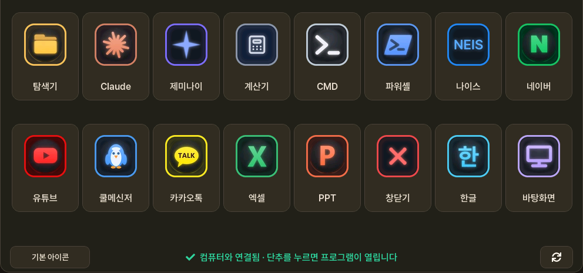
보드의 단축키 화면(7인치). 칸 이름과 그림은 탭덱에서 바꿔 보낼 수 있어요.
보드 단추로 열기 — 한글, 나이스, 유튜브, 수업 PPT…
16칸 꾸미기 — 이름·하는 일·아이콘을 바꾸면 보드로 보내요. 보드를 다시 굽지(보드에 프로그램을 새로 넣지) 않아도 돼요.
화면 켜고 끄기 도움 — 컴퓨터가 켜져 있는 동안 보드 화면을 끄지 않고, 컴퓨터가 꺼지면 보드도 화면을 꺼요.
2받기와 깔기
인터넷 창에서 penedu.web.app/deck 에 들어가 탭덱 받기를 눌러요. “흔하지 않은 파일”이라고 나오면 유지.
받은 압축 파일(여러 파일을 하나로 묶은 파일, 이름 끝이 .zip)을 두 번 클릭해 열어요. 안의 탭덱.exe(실행 파일)를 두 번 클릭해요. 압축은 풀지 않아도 돼요.
파란 “Windows의 PC 보호” 창이 뜨면 추가 정보 → 실행. 서명이 없는 프로그램이라 처음 한 번만 나와요.
작업 표시줄(화면 맨 아래 막대) 오른쪽 끝의 ^를 눌러요. 회색 둥근 네모 아이콘(탭덱 아이콘)이 보이면 끝이에요.
알아 두기 관리자 권한은 필요 없어요. 컴퓨터를 켤 때마다 저절로 켜져요. 꾸민 설정은 이 컴퓨터 안에 저장돼요.
학교 백신이 막으면 백신의 ‘예외(허용)’ 목록에 탭덱.exe 를 넣어 주세요.
3보드와 연결하기
보드를 데이터 케이블로 컴퓨터에 꽂아요. 7인치는 ‘UART’ 라고 적힌 단자, 4인치는 USB-C 단자예요.
5초쯤 지나면 탭덱 아이콘이 초록으로 바뀌어요. “7인치 알림판과 연결됐어요 (…)” 알림도 떠요. 괄호 안 글자는 컴퓨터마다 달라요.
보드에서 단축키 화면을 열어요. 7인치는 화면 맨 위 띠의 단축키를 눌러요. 4인치는 화면을 옆으로 밀어 네 번째 장으로 가요(과정 3).
단축키 화면 아래에 “컴퓨터와 연결됨”이 보이면 단추를 눌러 보세요.
아이콘 색
뜻
회색
알림판을 찾는 중이에요.
초록
연결됐어요.
주황
잠깐 멈춤(보드에 프로그램을 새로 넣을 때, 곧 ‘구울’ 때 씀).
탭덱 아이콘을 오른쪽 클릭하면 단축키 꾸미기… · 예전 보드만 쓰는 프로그램 목록 · 기록 보기 · 잠깐 멈추기(보드 굽기 전에) · 컴퓨터를 켤 때 저절로 켜기 · 끝내기가 있어요. ‘예전 보드만 쓰는 프로그램 목록’은 새 보드에서는 쓰지 않아요. 아이콘을 두 번 클릭해도 꾸미기 창이 열려요.
보드의 ⟳ 단추 보드 단축키 화면 오른쪽 아래 ⟳ 를 누르면 탭덱 연결을 바로 다시 확인해요.
4꾸미기 창 둘러보기
탭덱 아이콘 오른쪽 클릭 → 단축키 꾸미기…. 열리는 ‘단축키 꾸미기’ 창을 줄여서 꾸미기 창이라고 불러요.
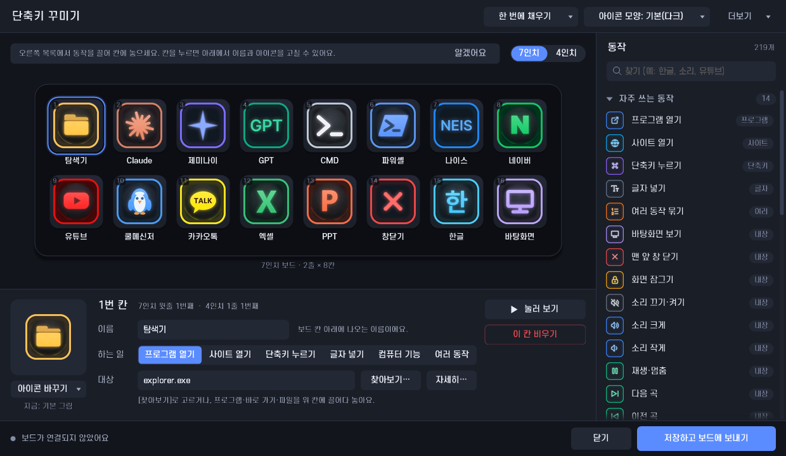
처음 열었을 때의 꾸미기 창
자리
하는 일
위 띠
한 번에 채우기 · 아이콘 모양(테마) · 더보기(내보내기·가져오기·기본값으로·글꼴 안내)
가운데 보드 모양
보드와 같은 16칸. 칸을 누르면 고르고, 끌어서 자리를 바꿔요. 오른쪽 위 7인치4인치로 모양을 바꿔 봐요.
오른쪽 동작 목록
자주 쓰는 동작과 아이콘 모음 205개. 위의 찾기 칸에 ‘소리’, ‘한글’처럼 쳐요.
아래 칸 설정
고른 칸의 이름·하는 일·대상·아이콘. ▶ 눌러 보기로 보드 없이 바로 해 봐요.
맨 아래
연결 상태 · 닫기 · 저장하고 보드에 보내기
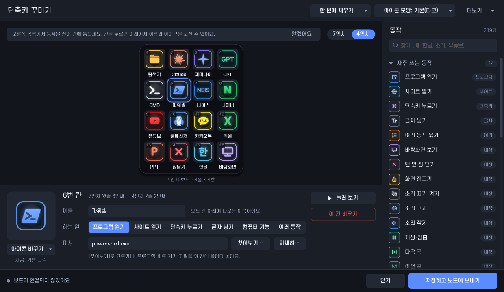
4인치 모양으로 보기(4×4)
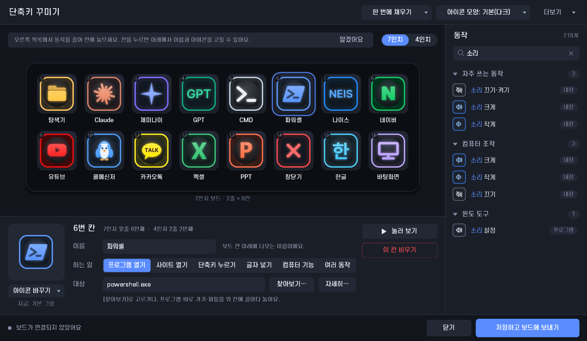
동작 목록에서 ‘소리’ 찾기
칸 번호 7인치는 윗줄 1~8, 아랫줄 9~16번이고, 4인치는 1~4번이 첫 줄이에요. 같은 번호 칸이 같은 일을 해요. 칸 설정 위에 “7인치 윗줄 3번째 · 4인치 1줄 3번째”처럼 알려 줘요.
5칸 채우기
끌어다 놓기
동작 목록 → 칸 : 이름·하는 일·아이콘이 한꺼번에 들어가요. Shift를 누른 채 놓으면 아이콘만 바뀌어요.
칸 → 다른 칸 : 두 칸의 자리가 바뀌어요. Ctrl을 누른 채 끌면 복사돼요.
바탕화면의 프로그램·바로 가기·인터넷 주소 → 칸 : 이름·대상·아이콘이 저절로 채워져요.
보드 칸 아래에 나오는 글자예요. 한글 6자, 영문 10자 안쪽이 좋아요. 보드 글꼴은 한글 2,350자(자주 쓰는 완성형)만 있어서, 그 밖의 글자·이모지·한자는 빨갛게 알려 줘요.
글자 넣기 주의 글자는 복사해서 붙여 넣는 방식이라, 원래 복사해 둔 내용은 바뀌어요.
7단축키 눌러서 넣기
‘단축키 누르기’ 칸에서 눌러서 넣기를 누르고, 키보드에서 단축키를 그대로 눌러요. 화면에 “Ctrl + Shift + M”처럼 보이면 확인.
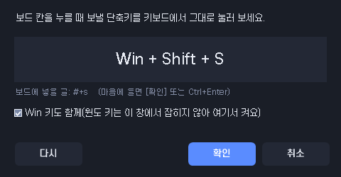
단축키 눌러서 넣기 창 — Win + Shift + S(화면 캡처)를 넣은 모습
Win 키가 들어가는 단축키(Win+V 클립보드, Win+Shift+S 캡처…)는 윈도가 먼저 가로채요. ‘Win 키도 함께’를 켜고 나머지 키만 누르세요.
이 창에서는 Tab·Enter·Esc 도 단축키로 기록돼요. 키보드로 끝낼 땐 Ctrl+Enter 확인, Shift+Esc 취소.
다시 넣으려면 다시.
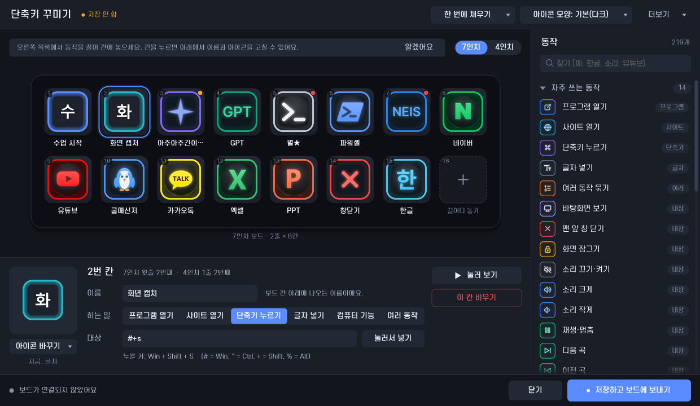
대상 칸 아래에 “누를 키: Win + Shift + S”처럼 읽기 쉬운 글이 나와요.
직접 쓸 때의 기호(알면 편해요)
꼭 외울 필요는 없어요. 눌러서 넣기를 쓰면 이 기호가 저절로 들어가요.
기호
뜻
기호
뜻
^
Ctrl
{ENTER}{TAB}{ESC}
Enter · Tab · Esc
+
Shift
{F5}
F5 (F1~F24)
%
Alt
{UP}{LEFT}
화살표
#
Win
{TAB 3}
Tab 세 번
예) ^c 복사 · ^+m Ctrl+Shift+M · %{F4} 창 닫기 · #+s 화면 캡처
8여러 동작 묶기
칸 하나를 누르면 여러 일을 차례대로 해요. 예) 수업 시작 칸 = 파워포인트 열기 → 2초 기다리기 → 나이스 열기 → 소리 끄기
하는 일에서 여러 동작을 고르면 차례 고치기 창이 열려요. 그 칸이 하던 일은 첫 동작으로 옮겨져요.
+ 동작 더하기로 하는 일을 골라 넣고, 아래에서 대상을 채워요(단축키는 눌러서 넣기, 컴퓨터 기능은 목록).
다음 동작까지 기다리기를 정해요(바로·0.3초~5초). 프로그램이 뜨는 데 시간이 걸리니 1~2초를 권해요.
위로·아래로 단추로 차례를 바꾸고, ▶ 차례대로 해 보기로 확인한 뒤 확인.
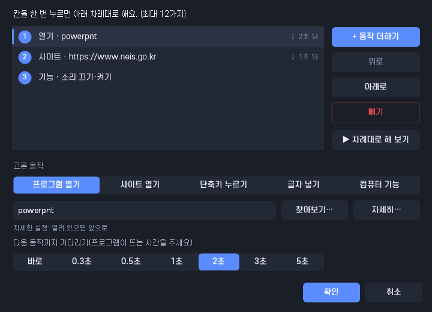
여러 동작 차례 고치기 창(최대 12가지)
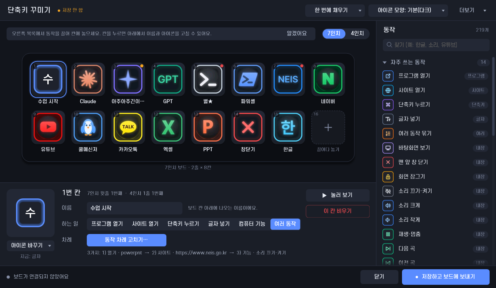
칸 설정 아래에 차례가 요약돼요.
빈 동작 대상이 빈 동작이 있으면 저장할 때 “3번째 동작이 비어 있어요”처럼 알려 줘요.
9자세한 설정
‘프로그램 열기’, ‘사이트 열기’, ‘글자 넣기’ 칸의 대상 옆 자세히…를 눌러요. 설정이 있으면 단추에 점이 찍히고, 아래에 요약이 나와요.
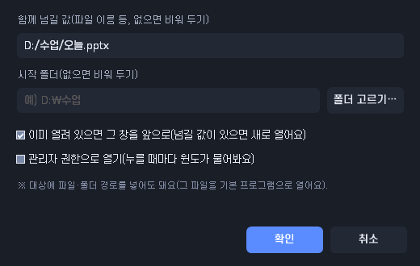
프로그램 열기 · 자세한 설정
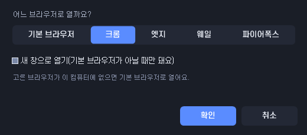
사이트 열기 · 자세한 설정
하는 일
설정
쓰는 곳
프로그램 열기
함께 넘길 값
열 파일을 함께 줘요. 예) 한글 + 오늘 수업.hwp
시작 폴더
프로그램이 처음 보는 폴더
이미 열려 있으면 그 창을 앞으로
메신저처럼 창을 하나만 띄우는 프로그램에 써요. 함께 넘길 값이 있으면 새로 열어요.
관리자 권한으로 열기
누를 때마다 윈도가 물어봐요
사이트 열기
브라우저 고르기
기본·크롬·엣지·웨일·파이어폭스. 없으면 기본 브라우저로 열어요.
새 창으로 열기
기본 브라우저가 아닐 때만 돼요
글자 넣기
넣은 뒤 Enter 누르기
채팅·검색창에 바로 보내기
10아이콘
칸 설정 왼쪽의 아이콘 상자를 누르거나 아이콘 바꾸기를 눌러요.
방식
설명
자동(프로그램에서)
프로그램의 아이콘을 가져와 보드 모양(어두운 사각)으로
글자
이름 첫 글자로 만든 아이콘
사이트 아이콘 받기
사이트의 작은 아이콘을 받아서(인터넷 필요)
그림 파일
내 그림. 틀에 넣기(기호만 있는 그림에 테두리를 씌움) / 그대로(테두리까지 그린 완성 그림)
기본 그림
보드에 원래 들어 있는 16개
모음에서
205개: 마이크로소프트·어도비·구글·한컴·학교·인공지능·윈도 도구·스트림덱 기본 동작…
아이콘 모양(테마)
위 띠의 아이콘 모양에서 고르면 모음에서 고른 아이콘이 모두 그 모양으로 바뀌어요. 보드의 색 테마와 맞추면 예뻐요.
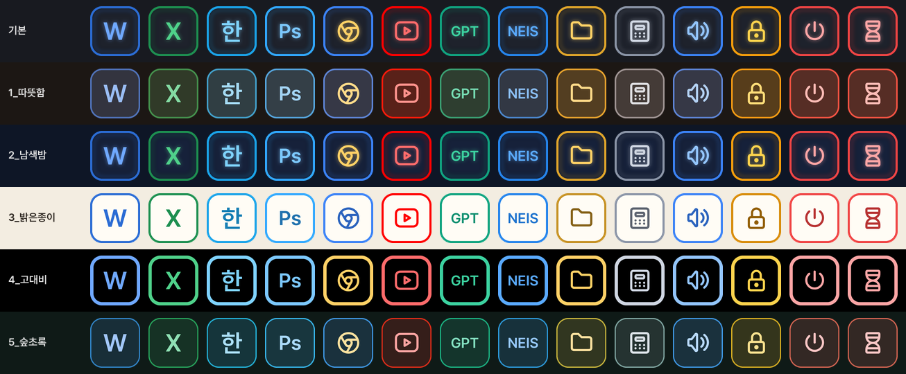
위부터 기본(다크) · 따뜻함 · 남색밤 · 밝은종이 · 고대비 · 숲초록
10아이콘 — 인공지능으로 만들기
보드 칸의 그림은 아주 작아요. 가로 72개, 세로 72개의 작은 점(픽셀)으로 그려요. 크게 만들어도 탭덱이 알아서 줄여요.
항목
권장
크기
정사각형 1024×1024(512 이상)
파일
PNG(그림 파일의 한 종류), 배경 투명
그림
가운데 기호 하나, 칸의 80%, 굵은 선, 색 2~3개
피할 것
작은 글씨·가는 선·사진 같은 그림·복잡한 배경
인공지능에게 줄 말(예시) — [ ] 안만 바꾸세요
[출석부] 를 나타내는 앱 아이콘 기호 하나를 그려 줘.
정사각형 1024x1024, 배경은 완전히 투명(PNG).
가운데에 기호 하나만, 화면의 80% 크기. 굵은 선의 평면 스타일,
색은 [밝은 초록] 한 가지와 흰색만. 글씨·그림자·배경 무늬는 넣지 마.
아주 작게(72픽셀) 줄여도 알아볼 수 있게 단순하게.
만든 그림을 칸에 끌어다 놓고 틀에 넣기를 고르면 다른 칸과 같은 모양이 돼요.
배경이 하얗게 나오면 “배경 투명”을 다시 부탁하거나 캔바의 ‘배경 제거’를 쓰세요. 회사 로고는 그대로 베끼지 말고 그 회사 색의 글자 한두 개로 만드세요.
11저장하고 보드에 보내기
맨 아래 저장하고 보드에 보내기를 눌러요(Ctrl+S).
바뀐 아이콘만 보내요. 보드 단축키 화면에 “아이콘 받는 중 3/16” → “새 단축키를 받았습니다”.
7인치는 아이콘 하나에 3~7초, 16칸을 다 바꾸면 1분쯤 걸려요. 4인치는 더 빨라요.
보드가 꽂혀 있지 않으면 다음에 꽂을 때 저절로 보내요.
보드가 날씨·시간표를 받는 중이면 끝난 뒤 보내요.
보드를 처음 상태로: 더보기 → 기본값으로 되돌리기…, 또는 보드 단축키 화면의 기본 아이콘을 3초 안에 두 번.
예전 보드라면 꾸미기 창 맨 아래에 “이 보드는 아이콘 받기를 못 해요”가 보여요. 이때는 보드 프로그램을 새로 구워야(보드에 프로그램을 새로 넣어야) 해요. 정보 담당 선생님께 부탁해요. 단추로 프로그램 열기는 예전 보드에서도 돼요.
12다른 선생님과 나누기
더보기 → 내보내기… : 지금 16칸(이름·하는 일·아이콘·여러 동작·자세한 설정)을 압축 파일(.zip) 하나로 저장해요.
더보기 → 가져오기… : 받은 압축 파일을 불러와요. 저장하지 않은 수정이 있으면 먼저 물어봐요. 확인한 뒤 저장하고 보드에 보내기를 눌러야 보드로 가요.
프로그램 경로 보낸 컴퓨터와 받은 컴퓨터의 프로그램 위치가 다를 수 있어요. 열리지 않는 칸은 대상을 고쳐 주세요.
13키보드로 쓰기
키
하는 일
키
하는 일
←↑→↓
칸 옮기기
F2
이름 고치기
Enter
눌러 보기
Ctrl+S
저장하고 보내기
Delete
칸 비우기
Ctrl+F
동작 찾기
Ctrl+C/V
칸 복사·붙여넣기
14끄기·지우기
잠깐 끄기 : 탭덱 아이콘 오른쪽 클릭 → 끝내기. 다시 켜려면 시작 메뉴의 ‘탭덱’.
저절로 켜지 않기 : 탭덱 아이콘 오른쪽 클릭 → ‘컴퓨터를 켤 때 저절로 켜기’를 끔.
지우기 : 탭덱을 받을 때 받은 압축 파일 안의 끄기.bat(탭덱을 끄고 지우는 파일)을 두 번 클릭해요. 꾸민 설정까지 지울지 물어봐요.
15안 될 때
탭덱 아이콘 오른쪽 클릭 → 기록 보기에서 마지막 줄을 봐요.
증상·기록
해결
‘포트 열어 봄’이 없어요 (포트 = 보드가 이어지는 연결 구멍)
컴퓨터가 보드를 못 봐요. 데이터 케이블인지, 7인치는 ‘UART’ 단자인지 봐요. 다른 USB 구멍에도 꽂아 봐요. 7인치는 CH343 드라이버(보드를 쓰게 해 주는 작은 프로그램)가 필요할 수 있어요. 정보 담당 선생님께 부탁해요.
‘알림판 아님(답 없음)’
보드 프로그램이 예전 것이거나, 같은 방식으로 연결되는 다른 장치예요. 1분 뒤 다시 확인해요.
‘알림판 확인’까지 있는데 안 열려요
칸의 대상(프로그램 경로·주소)을 고치고 ▶ 눌러 보기로 확인해요.
단축키가 안 먹어요
단축키는 맨 앞에 있는 창에 들어가요. 보낼 프로그램 창을 먼저 눌러 두세요. Win 키 조합은 ‘Win 키도 함께’를 켰는지 봐요.
여러 동작 중 일부가 안 돼요
앞 프로그램이 뜨기 전에 다음 동작이 와서 그래요. 기다리기를 1~2초 늘려요.
“설정 파일이 깨져 있어 기본값으로 시작해요”
원래 설정은 이름 뒤에 ‘.broken’이 붙은 파일로 남아 있어요. 내보내 둔 압축 파일이 있으면 가져오기로 되살려요.
컴퓨터를 켠 뒤 아이콘이 없어요
시작 메뉴에서 ‘탭덱’을 눌러 켜요.
글꼴: 에스코어 드림 (S-Core) · 아이콘 일부: Tabler Icons (MIT) · 받는 곳 penedu.web.app/deck
자세한 설명서 · 과정 1~15
자세한 설명서
처음부터 하나씩 따라 해요
탭덱을 받는 날부터 보드 단추로 프로그램이 열릴 때까지, 한 단계씩 같이 가요.
과정 1시작 전에 준비할 것
과정 9따라 하기⑤ 내 그림·인공지능 아이콘
과정 2탭덱 받고 깔기
과정 10한 번에 채우기와 아이콘 모양
과정 3보드 꽂고 연결 확인
과정 11보드로 보내고 확인
과정 4꾸미기 창 처음 열기
과정 12다른 선생님께 나누기
과정 5따라 하기① 빈 칸에 ‘한글’
과정 13문제 해결 순서도
과정 6따라 하기② 나이스와 브라우저
과정 14자주 묻는 질문
과정 7따라 하기③ 화면 캡처 단축키
과정 15낱말 풀이
과정 8따라 하기④ ‘수업 시작’ 여러 동작
앞의 간단 설명서는 찾아볼 때, 여기는 따라 할 때 봐요.처음부터 과정 11까지 약 30분
과정 1시작 전에 준비할 것
이 과정의 목표 보드, 케이블, 컴퓨터 세 가지를 갖추고, 보드의 어느 구멍에 꽂을지 알아 둬요.
걸리는 시간 약 5분 · 필요한 것: 보드, 케이블, 윈도 컴퓨터
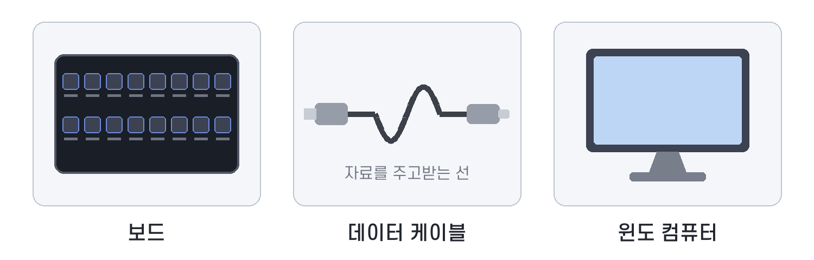
준비물은 세 가지예요.
보드 크기 보기 → 내 보드가 7인치인지 4인치인지 봐요. 화면 모양을 보면 알 수 있어요.
7인치: 가로로 긴 화면이에요(공책을 옆으로 눕힌 크기). 단축키 화면의 단추 칸이 2줄, 한 줄에 8칸이에요.
4인치: 거의 정사각형인 작은 화면이에요(손바닥만 해요). 단추 칸이 4줄, 한 줄에 4칸이에요.
그래도 모르겠으면 보드를 준비해 준 분께 물어봐요.
케이블 고르기 → 데이터 케이블(자료를 주고받는 선)이 필요해요. 충전만 되는 선은 안 돼요.
구별하는 법 휴대폰을 그 선으로 컴퓨터에 꽂아 봐요. 탐색기(폴더 창)에서 휴대폰 안의 사진이 보이면 데이터 케이블이에요. 안 보이면 휴대폰 화면 위쪽 알림을 눌러 ‘파일 전송’을 골라요(휴대폰마다 이름이 조금 달라요). 그래도 안 보이면 충전만 되는 선이에요.
꽂을 단자(선을 꽂는 구멍) 찾기 → 보드 옆면을 봐요.
7인치: ‘UART’ 글자가 적힌 단자에 꽂아요.
4인치: USB-C 단자에 꽂아요.
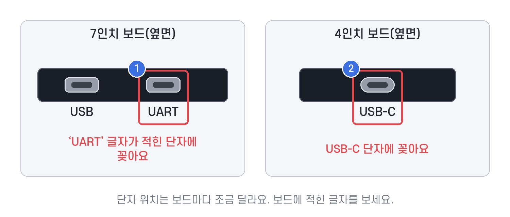
① 7인치는 ‘UART’ 단자, ② 4인치는 USB-C 단자예요.
컴퓨터 보기 → 윈도 컴퓨터여야 해요. 빈 USB 구멍도 하나 있어야 해요. 인터넷은 세 가지 때 필요해요. 탭덱을 받을 때, ‘사이트 열기’ 칸을 누를 때, ‘사이트 아이콘 받기’를 할 때예요.
시간 잡기 → 처음부터 과정 11까지 약 30분 걸려요.
잘 됐는지 확인 아래 세 칸에 모두 표시할 수 있으면 준비 끝이에요.
표시
준비물
□
보드(7인치 또는 4인치)
□
데이터 케이블
□
인터넷이 되는 윈도 컴퓨터
이렇게 안 되면
케이블이 하나뿐이고, 데이터 케이블인지 모르겠어요 → 우선 그 선으로 해 봐요. 과정 3에서 탭덱 아이콘이 초록으로 안 바뀌면 그때 케이블부터 바꿔요.
보드에 단자가 두 개 있어요 → 단자 옆에 적힌 작은 글자를 봐요. 단자 자리는 보드마다 조금 달라요.
과정 2탭덱 받고 깔기
이 과정의 목표 탭덱을 깔고, 알림 영역(작업 표시줄 오른쪽 끝, 시계 옆)에 탭덱 아이콘이 생긴 것을 봐요.
걸리는 시간 약 5분 · 필요한 것: 인터넷이 되는 윈도 컴퓨터 · 관리자 권한은 필요 없어요
누르기 인터넷 창(엣지나 크롬)을 열어요 → 맨 위 주소 칸을 눌러요 → penedu.web.app/deck 를 그대로 쳐요 → Enter 보이는 것 탭덱을 받는 쪽이 열려요.
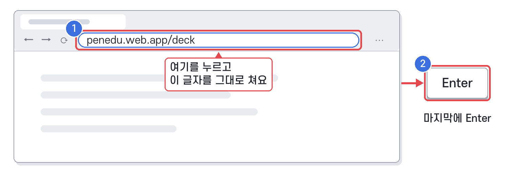
① 주소 칸에 그대로 치고 Enter를 눌러요.
누르기탭덱 받기 단추를 눌러요. 보이는 것 인터넷 창 오른쪽 위에 받은 파일 목록이 보여요.
“흔하지 않은 파일” 같은 경고가 보이면 파일 줄의 …(점 세 개)를 누르고 유지를 눌러요.
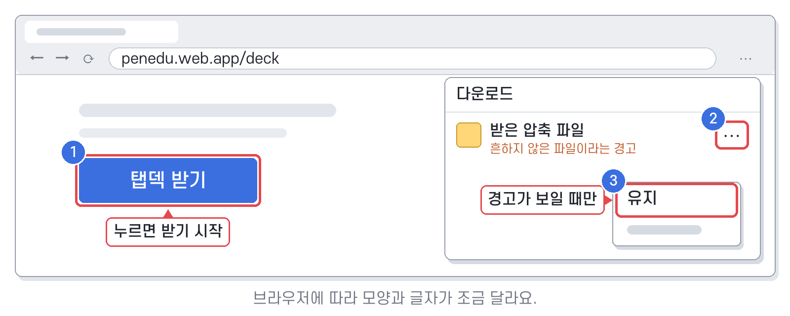
① 탭덱 받기 → ② 점 세 개 → ③ 유지. 단추 이름과 모양은 인터넷 창에 따라 조금 다를 수 있어요.
누르기 받은 파일 목록에서 파일 열기를 눌러요. 또는 탐색기(폴더 창)를 열고 왼쪽의 다운로드 폴더에서 받은 압축 파일(여러 파일을 하나로 묶은 파일)을 두 번 눌러요. 보이는 것 압축 파일 안에 탭덱.exe 가 보여요. 이름 끝의 .exe는 ‘실행하는 프로그램’이라는 뜻이에요. 이것을 두 번 눌러요. 압축은 풀지 않아도 돼요.
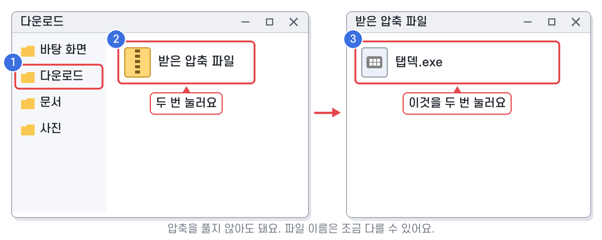
① 다운로드 폴더 → ② 받은 압축 파일 → ③ 탭덱.exe. 압축 파일 이름은 화면에 따라 조금 다를 수 있어요.
보이는 것 파란 “Windows의 PC 보호” 창이 뜰 수 있어요. 누르기 작은 글씨 추가 정보를 눌러요 → 아래에 생긴 실행을 눌러요.
만든 사람 확인 표시(서명)가 없는 프로그램이라 그래요. 처음 한 번만 나와요.
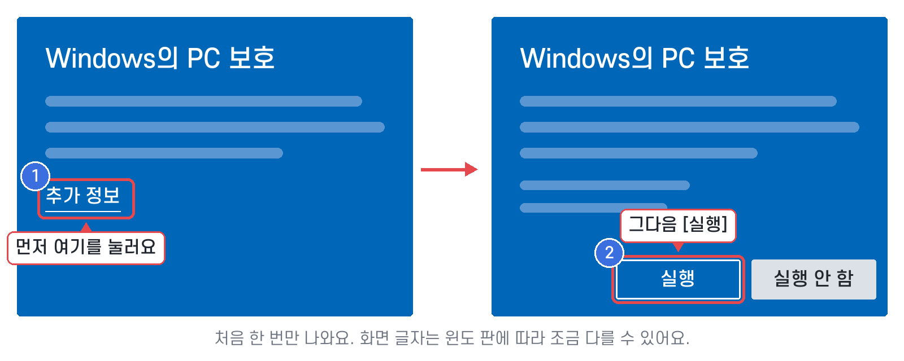
① 추가 정보 → ② 실행
보이는 것 화면 오른쪽 아래에 풍선 알림이 떠요. “설치했어요. 컴퓨터를 켤 때 저절로 켜져요.”
누르기 작업 표시줄(화면 맨 아래 막대) 오른쪽 끝의 ^(숨은 아이콘 보기)를 눌러요. 보이는 것 위로 펼쳐진 작은 상자 안에 회색 둥근 네모 아이콘이 있어요. 이것이 탭덱 아이콘이에요. 이 설명서에서는 앞으로 ‘탭덱 아이콘’이라고 불러요.
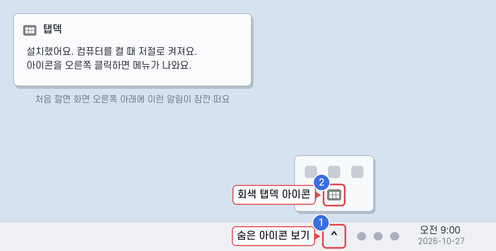
① ^ 를 누르면 ② 회색 탭덱 아이콘이 보여요.
늘 보이게 하기(권해요) 탭덱 아이콘은 평소 ^ 안에 숨어 있어요. 회색 아이콘을 마우스로 누른 채, ^ 바깥의 시계 옆 작업 표시줄로 끌어서 놓아요. 보이는 것 시계 옆에 회색 아이콘이 늘 보여요.
끌어 놓기가 안 되면: 시작 단추 → 설정 → 개인 설정 → 작업 표시줄 → ‘기타 시스템 트레이 아이콘’을 펼치고 ‘탭덱’을 켜요. 윈도 판에 따라 이름과 자리가 조금 다를 수 있어요. 이 단계는 건너뛰어도 돼요. 그때는 늘 ^를 눌러 아이콘을 찾아요.
잘 됐는지 확인 회색 아이콘이 보이면 성공이에요. 회색은 “아직 보드를 찾는 중”이라는 뜻이에요. 보드를 아직 안 꽂았으니 정상이에요.
이렇게 안 되면
두 번 눌러도 아무 일이 없어요 → 작업 표시줄 오른쪽 끝의 ^ 단추(6번 단계)를 눌러, 아이콘이 이미 있는지 봐요. 벌써 켜져 있을 수 있어요.
학교 백신(바이러스 막는 프로그램)이 막아요 → 백신의 ‘예외(허용)’ 목록에 탭덱.exe 를 넣어야 해요. 정보 담당 선생님(학교 컴퓨터를 맡은 선생님)께 부탁해요.
컴퓨터를 다시 켰더니 아이콘이 없어요 → 시작 메뉴에서 ‘탭덱’을 눌러요.
과정 3보드 꽂고 연결 확인
이 과정의 목표 탭덱 아이콘이 초록이 되고, 보드 단추를 누르면 컴퓨터에 탐색기(폴더 창)가 열리는 것을 봐요.
걸리는 시간 약 5분 · 필요한 것: 보드, 데이터 케이블, 탭덱을 깐 컴퓨터
꽂기 데이터 케이블로 보드와 컴퓨터를 이어요. 7인치는 ‘UART’ 단자, 4인치는 USB-C 단자예요. 보이는 것 보드는 이 선으로 전기도 받아요. 보드 화면이 꺼져 있었다면 켜져요. 처음 켜지면 시간표나 시계 화면이 보여요.
누르기 보드에서 단축키 화면을 열어요.
7인치: 화면 맨 위 띠의 다섯 단추(시간표 · 시계 · 단축키 · 찾기 · 설정) 가운데 단축키를 손가락으로 눌러요.
4인치: 화면을 손가락으로 옆으로 밀어 넘겨요. 시계 → 오늘 시간표 → 주간 시간표 다음, 네 번째 장이 단축키예요.
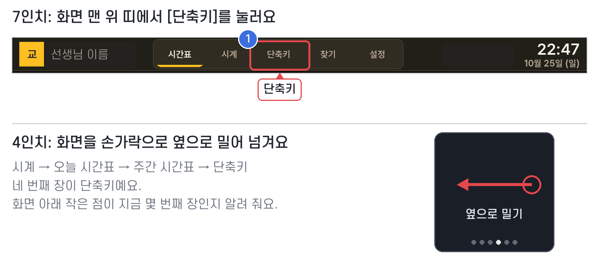
① 7인치는 맨 위 띠의 단축키 단추. 4인치는 옆으로 밀어 넘겨요. 선생님 이름 자리는 가렸어요.보이는 것 단추 16개가 있는 단축키 화면이 열려요. 아래 줄에 “탭덱을 기다리는 중 …”이 보여요.
기다리기 5초쯤 기다려요. 보이는 것 탭덱 아이콘이 초록으로 바뀌어요. 아이콘이 ^ 안에 숨어 있으면 ^를 눌러 봐요. 풍선 알림 “7인치 알림판과 연결됐어요 (…)”가 떠요. 괄호 안 글자는 컴퓨터마다 달라요.
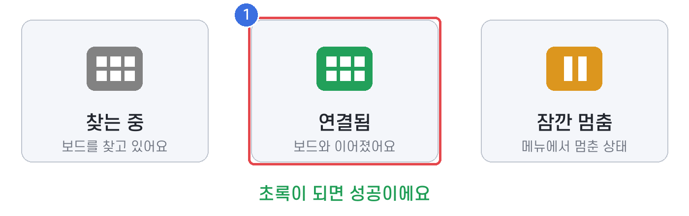
회색 = 찾는 중 · 초록 = 연결됨 · 주황 = 잠깐 멈춤. ① 초록이 되면 성공이에요.
누르기 탭덱 아이콘을 오른쪽 클릭(마우스 오른쪽 단추로 한 번 누르기)해요. 보이는 것 메뉴가 열려요. 맨 위 회색 줄이 연결됨: 7인치(…) 이면 잘 붙은 거예요.
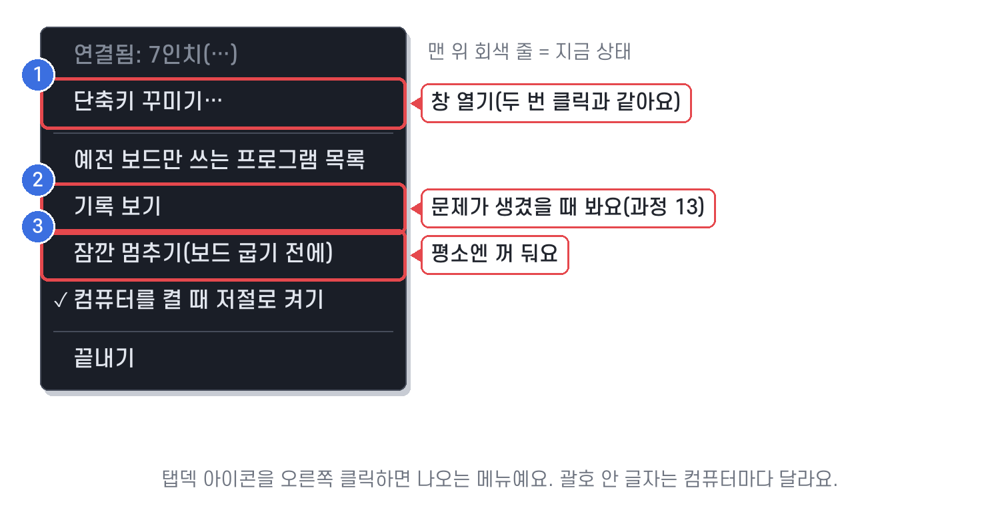
① 단축키 꾸미기… ② 기록 보기 ③ 잠깐 멈추기(보드 굽기 전에)
메뉴 이름도 함께 익혀 둬요.
단축키 꾸미기… : 16칸을 꾸미는 창을 열어요(과정 4).
기록 보기 : 안 될 때 원인을 찾아봐요(과정 13).
잠깐 멈추기(보드 굽기 전에) : 보드에 프로그램을 새로 넣을 때(이것을 ‘굽기’라고 해요)만 써요. 평소에는 꺼 둬요.
나머지 줄(예전 보드만 쓰는 프로그램 목록 · 컴퓨터를 켤 때 저절로 켜기 · 끝내기)은 처음에는 안 눌러도 돼요. ‘예전 보드만 쓰는 프로그램 목록’은 새 보드에서는 쓰지 않아요.
메뉴를 닫으려면 Esc를 눌러요.
보이는 것 보드 아래 줄 글이 “컴퓨터와 연결됨 · 단추를 누르면 프로그램이 열립니다”로 바뀌어요.
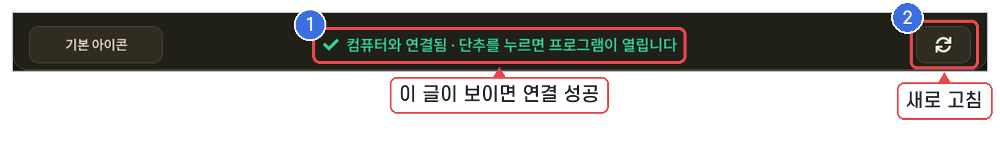
① 보드 아래 줄 글 ② 새로 고침 단추
누르기 보드의 1번 칸 탐색기를 손가락으로 눌러요. 보이는 것 컴퓨터에 탐색기(폴더 창)가 열려요. 확인했으면 탐색기 창은 닫아요.
잘 됐는지 확인 세 가지가 모두 보이면 성공이에요.
컴퓨터의 탭덱 아이콘이 초록
보드 아래 줄에 “컴퓨터와 연결됨”
보드 1번 칸을 누르면 탐색기가 열림
이렇게 안 되면
탭덱 아이콘이 회색 그대로예요 → 오른쪽 클릭 메뉴 맨 위가 “알림판을 찾는 중 — 7인치는 UART 단자 …”예요. 꽂은 단자를 다시 보고, 다른 케이블로 바꿔 봐요. 그래도 안 되면 과정 13 순서도로 가요.
아이콘이 주황이에요 → 메뉴의 잠깐 멈추기(보드 굽기 전에)가 켜져 있어요. 한 번 눌러서 꺼요.
컴퓨터 아이콘은 초록인데 보드 글만 안 바뀌어요 → 보드 단축키 화면 오른쪽 아래 새로 고침(⟳) 단추를 눌러요.
과정 4꾸미기 창 처음 열기
이 과정의 목표 꾸미기 창을 열어 다섯 구역을 알아보고, 칸 하나를 골라 ▶ 눌러 보기까지 해 봐요.
걸리는 시간 약 10분 · 필요한 것: 탭덱을 깐 컴퓨터(보드는 없어도 돼요)
누르기 탭덱 아이콘을 두 번 클릭해요(^ 안에 숨어 있으면 ^를 먼저 눌러요). 또는 오른쪽 클릭 → 단축키 꾸미기… 보이는 것 “단축키 꾸미기” 창이 열려요. 이 설명서에서는 줄여서 꾸미기 창이라고 불러요.
보이는 것 처음 열면 창 가운데에 둘러보기 안내가 떠요. 제목은 “단축키 꾸미기 창이에요”, 왼쪽 위에 “1 / 10”이 보여요. 누르기다음을 눌러 끝까지 봐요. 그만 보려면 그만 보기를 눌러요.
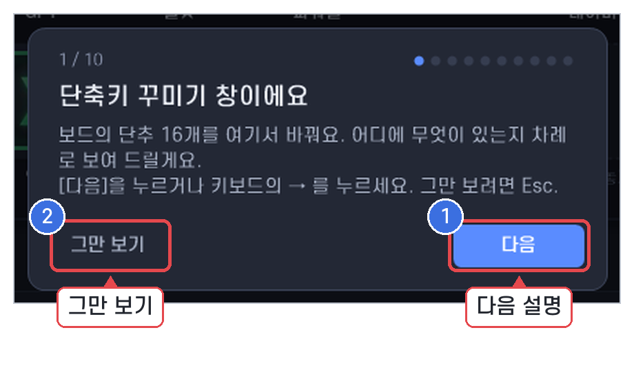
① 다음 ② 그만 보기. 마지막 장에서는 다음 대신 끝이 보여요.
다시 보고 싶으면 위 띠 설명서 ▾ → 둘러보기 안내 다시 보기를 눌러요.
알아 두기 창은 다섯 구역으로 나뉘어요. 이름만 기억해 두면 돼요. 구역마다 하는 일은 간단 설명서 4장(5쪽) 표에 있어요.
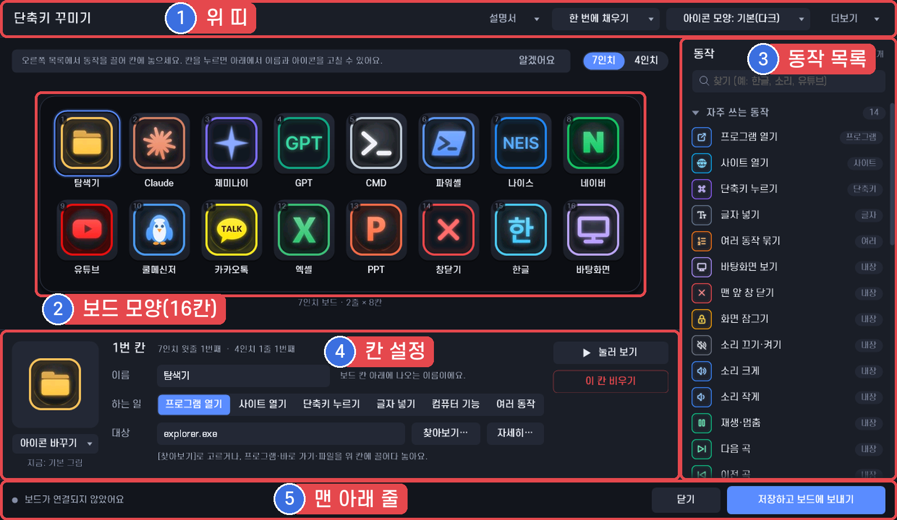
① 위 띠 ② 보드 모양(16칸) ③ 동작 목록 ④ 칸 설정 ⑤ 맨 아래 줄
누르기 보드 모양 위쪽의 안내 띠에서 알겠어요를 눌러요(안 눌러도 돼요). 보이는 것 안내 띠가 사라져요.
누르기 보드 모양에서 1번 칸 탐색기를 한 번 눌러요. 보이는 것 칸에 파란 테두리가 생겨요. 아래 칸 설정에 “1번 칸 · 7인치 윗줄 1번째 · 4인치 1줄 1번째”가 보여요.
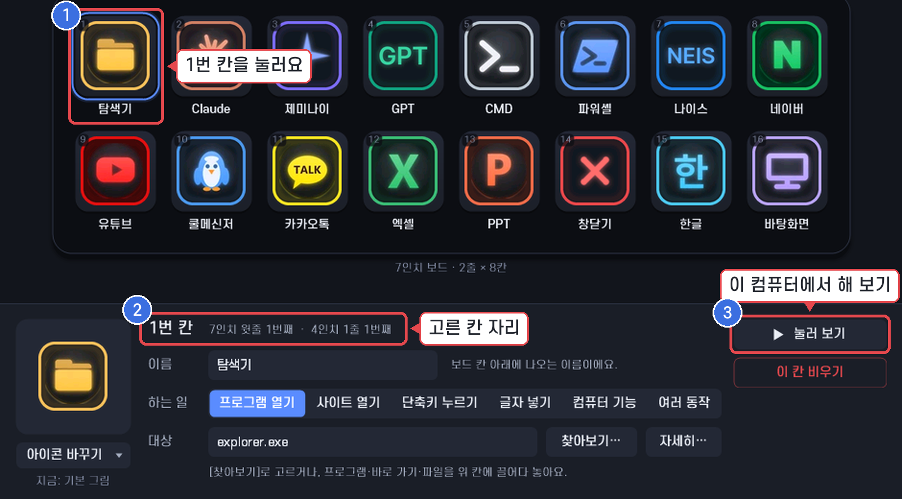
① 1번 칸 ② 칸 위치 글 ③ ▶ 눌러 보기
누르기 오른쪽의 ▶ 눌러 보기를 눌러요. 보이는 것 보드가 없어도 탐색기가 열려요. 확인했으면 탐색기 창은 닫아요.
읽기 맨 아래 왼쪽 글을 봐요.
보드가 꽂혀 있으면: “보드: 7인치 연결됨 · 보드는 기본 아이콘”
보드가 없으면: “보드가 연결되지 않았어요”
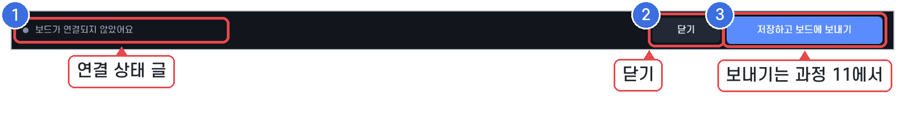
① 연결 상태 글 ② 닫기 ③ 저장하고 보드에 보내기(과정 11에서 써요)
연습하고 싶으면 위 띠 설명서 ▾ → 연습 과제 해 보기를 눌러요. 보이는 것 창 왼쪽 위에 연습 과제 6가지 목록이 떠요. 하나씩 해 보면 저절로 ✓ 표시가 생겨요. 다 했거나 그만하려면 목록의 닫기를 눌러요.
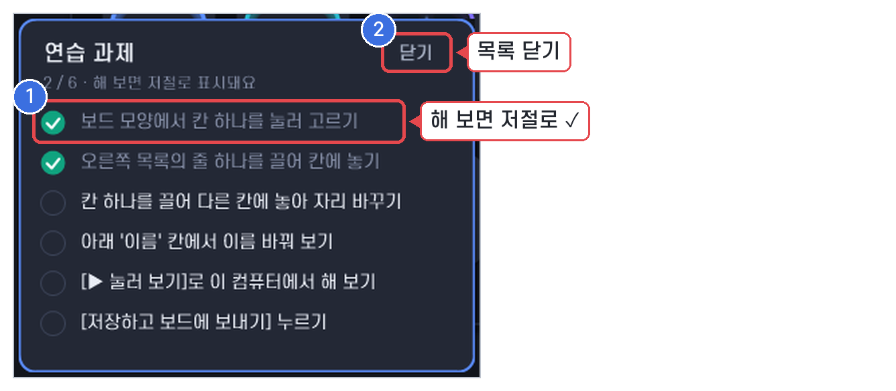
① 해 보면 저절로 ✓ ② 목록 닫기
마지막 줄은 하지 마세요 연습 과제의 마지막 줄 ‘[저장하고 보드에 보내기] 누르기’를 하면 연습한 것이 정말로 저장되고 보드로 가요. 셋째 줄(칸 자리 바꾸기)을 했다면 칸 번호도 바뀌어서, 과정 5~9와 맞지 않아요. 연습이 끝나면 다음 단계처럼 닫기 → 아니요로 닫고 다시 열어요.
누르기 맨 아래 닫기를 눌러요. 보이는 것 무언가를 고쳤다면 “저장하지 않은 변경이 있어요. 저장할까요?”라고 물어요.
예 = 고친 것을 저장하고 보드로 바로 보내요. 보드 칸이 바뀌어요.
아니요 = 고친 것을 버리고 닫아요. 연습만 했으면 아니요를 눌러요.
취소 = 닫지 않고 꾸미기 창으로 돌아가요.
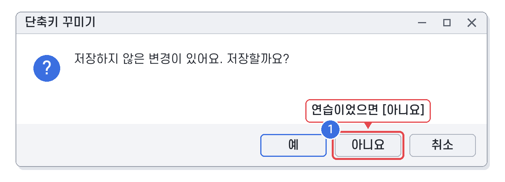
① 연습만 했으면 아니요. 예를 누르면 저장하고 보드로 보내요.
잘 됐는지 확인▶ 눌러 보기를 눌렀을 때 탐색기가 열리면 성공이에요.
이렇게 안 되면
창이 화면 밖으로 잘려요 → 창 맨 위 제목 띠를 끌어서 옮겨요. 또는 제목 띠를 두 번 눌러 크게 만들어요.
아이콘을 두 번 클릭해도 창이 안 열려요 → 오른쪽 클릭 → 단축키 꾸미기…로 열어요.
둘러보기 안내가 안 떠요 → 전에 이미 본 거예요. 설명서 ▾ → 둘러보기 안내 다시 보기.
과정 5따라 하기① 빈 칸에 ‘한글’ 넣기
이 과정의 목표 16번 칸(바탕화면)을 비우고, 동작 목록에서 ‘한글’을 끌어 넣어요. 그다음 ▶ 눌러 보기로 한글 프로그램이 열리는 것을 봐요.
걸리는 시간 약 5분 · 필요한 것: 꾸미기 창, 컴퓨터에 깔린 한글 프로그램
이어지는 이야기 과정 5부터 과정 9까지는 칸 다섯 개를 차례로 바꿔요. 16번 → 한글, 6번 → 나이스, 2번 → 화면 캡처, 1번 → 수업 시작, 3번 → 내 그림이에요. 저장은 과정 10 첫 단계에서 한 번, 과정 11에서 한 번 해요. 중간에 창을 닫아야 하면 먼저 Ctrl+S로 저장해요(저장하면 보드로도 가요). 15번 칸에도 한글이 있지만, 여기서는 연습으로 16번에 넣어 봐요.
누르기 보드 모양의 16번 칸 바탕화면을 오른쪽 클릭해요. 보이는 것 작은 메뉴가 열려요. 비우기를 눌러요.
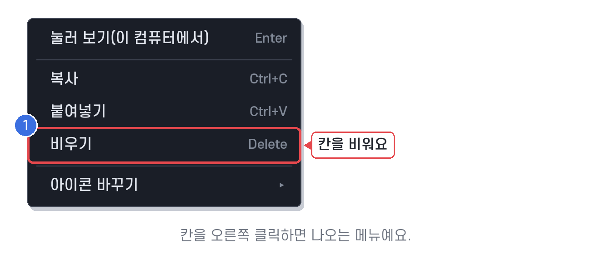
① 비우기보이는 것 16번 칸에 ‘+’ 표시와 “끌어다 놓기” 글자가 보여요. 아래 칸 설정에는 “빈 칸이에요. 위에서 하는 일을 고르거나, 오른쪽 목록에서 끌어다 놓으세요.”가 나와요.
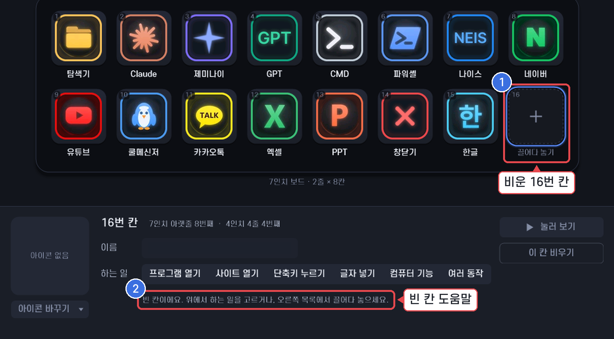
① 빈 16번 칸 ② 빈 칸 도움말
누르기 오른쪽 위 찾기 칸(“찾기 (예: 한글, 소리, 유튜브)”라고 흐리게 적힌 칸)을 눌러요 → 한글 을 그대로 쳐요. 보이는 것 동작 목록에 ‘한글’ 줄이 보여요.
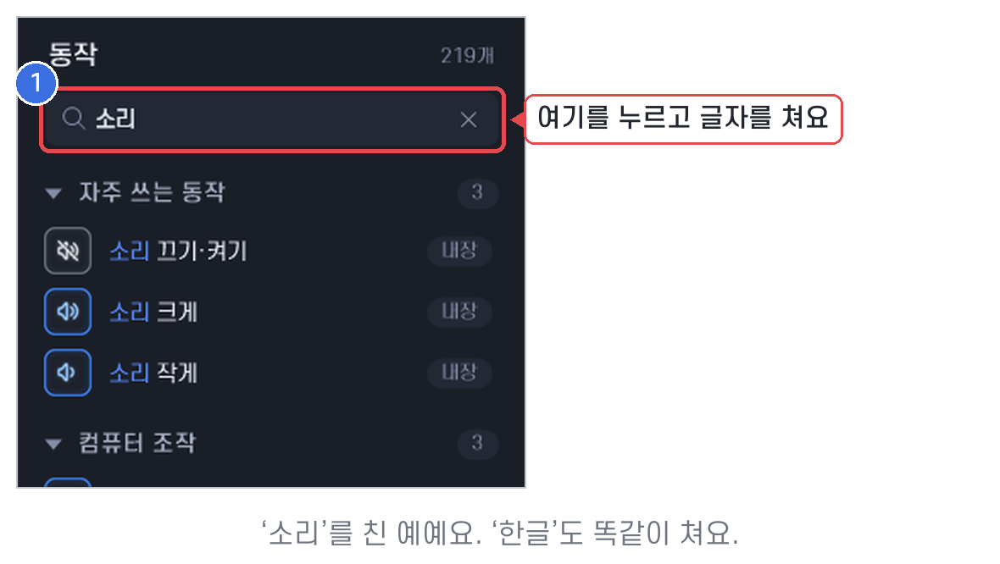
① 찾기 칸. ‘소리’를 친 예예요. ‘한글’도 똑같이 쳐요.
끌어 놓기 ‘한글’ 줄을 마우스 왼쪽 단추로 누른 채, 16번 칸 위까지 끌고 가서 손을 떼요. 보이는 것 16번 칸에 ‘한’ 아이콘과 이름 ‘한글’이 생겨요. 맨 아래 왼쪽에 “16번 칸에 '한글'을 넣었어요.”가 나와요.
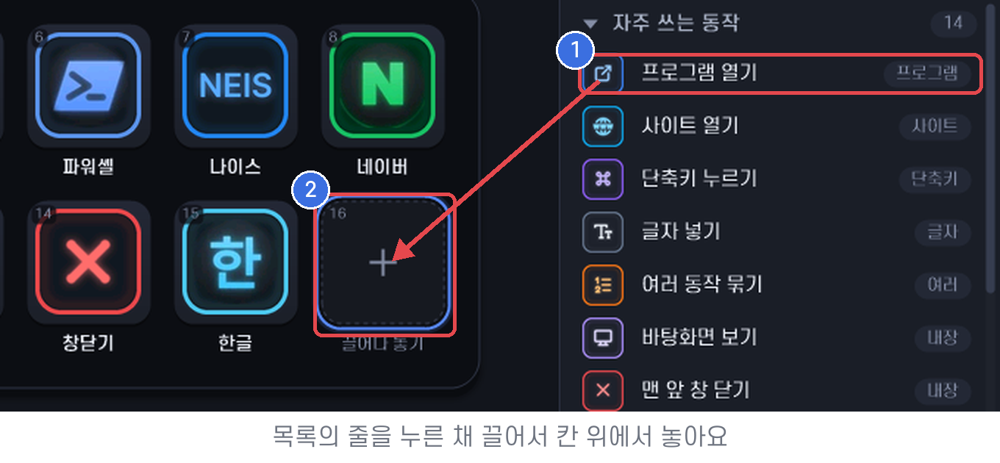
① 목록의 줄을 누른 채 ② 칸 위로 끌어서 놓아요.
끌기가 어려우면 16번 칸을 먼저 한 번 눌러 골라요 → ‘한글’ 줄을 오른쪽 클릭 → 고른 칸에 넣기를 눌러요. 결과는 같아요.
읽기 아래 칸 설정을 봐요.
이름: 한글
하는 일: 프로그램 열기가 파랗게 켜져 있어요.
대상(무엇을 열지): hwp (윈도가 한글 프로그램을 찾는 이름이에요)
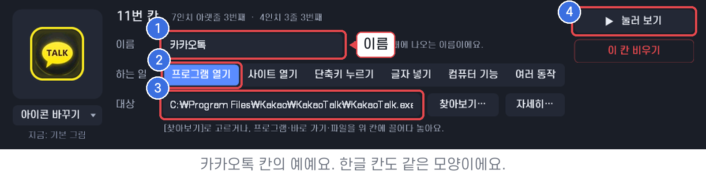
① 이름 ② 하는 일 ③ 대상 ④ ▶ 눌러 보기. 그림은 다른 칸의 예예요. 한글 칸도 같은 모양이에요.
누르기▶ 눌러 보기를 눌러요. 보이는 것 한글 프로그램이 열려요. 확인했으면 한글 창은 닫아요.
보이는 것 위 띠 제목 옆에 “저장 안 함”이 생겼어요. 아직 저장하지 않았다는 뜻이에요. 지금은 저장하지 않아도 돼요. 과정 10 첫 단계에서 저장해요.
잘 됐는지 확인 16번 칸 이름이 ‘한글’이고, ▶ 눌러 보기로 한글이 열리면 성공이에요.
이렇게 안 되면
“열지 못했어요: … 대상(무엇을 열지)을 확인해 주세요.”가 떠요 → 이 컴퓨터에서는 한글 프로그램의 경로(파일이 있는 자리)가 달라요. 바탕화면의 ‘한글’ 바로 가기 아이콘을 16번 칸 위에 끌어다 놓아요. 바탕화면에 없으면 시작 단추 → 모든 앱에서 ‘한글’을 찾아 바탕화면으로 끌어다 놓아요. 바로 가기가 생기면 그것을 16번 칸에 끌어다 놓아요. 대상 옆 찾아보기…로 골라도 돼요.
찾기 칸에 “찾는 것이 없어요”가 떠요 → 글자를 지우고 다시 쳐요. 띄어쓰기 없이 한글 두 글자만 쳐요.
다른 칸에 잘못 놓았어요 → 그 칸을 오른쪽 클릭 → 비우기. 또는 닫기 → 아니요로 닫고 처음부터 다시 해요.
과정 6따라 하기② 사이트(나이스) 넣고 브라우저 고르기
이 과정의 목표 6번 칸(파워셸)을 ‘나이스’ 사이트를 여는 칸으로 바꿔요. 그리고 엣지로 열리게 정해요.
걸리는 시간 약 5분 · 필요한 것: 꾸미기 창(과정 4), 인터넷 연결
‘사이트 열기’는 칸을 누르면 브라우저(인터넷 창)가 열리고, 정해 둔 주소로 바로 가는 기능이에요.
더 짧은 길(익숙해지면) 6번 칸을 누른 뒤, 오른쪽 찾기 칸에 나이스 를 쳐요. 목록의 ‘나이스’ 줄을 6번 칸에 끌어 놓으면 이름·주소·아이콘이 한꺼번에 들어가요. 그다음 5번 단계(브라우저 고르기)만 하면 돼요. 처음이면 아래 1번 단계부터 차례로 해요.
누르기 보드 모양에서 6번 칸 파워셸을 눌러요. 보이는 것 6번 칸에 파란 테두리가 생겨요. 아래 칸 설정 위에 “6번 칸”이 보여요.
누르기 ‘하는 일’ 줄에서 사이트 열기를 눌러요. 보이는 것사이트 열기가 파랗게 바뀌어요. 대상 칸 아래에 “사이트 주소를 넣어요. 예) https://www.naver.com”이 보여요.
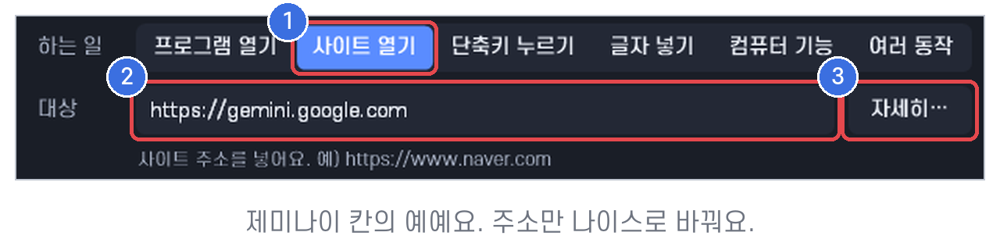
① 사이트 열기 ② 대상(무엇을 열지) 칸 ③ 자세히… 단추. 그림은 제미나이 칸의 예예요. 주소만 나이스로 바꿔요.
알아 두기 대상 칸에는 원래 글(powershell.exe)이 그대로 남아 있어요. 다음 단계에서 지워요.
누르기 대상 칸을 눌러요 → Ctrl+A를 눌러 남은 글을 모두 고르고 → Delete로 지워요 → https://www.neis.go.kr 를 그대로 쳐요. 보이는 것 대상 칸에 주소가 들어가요. 맨 앞 https:// 까지 빠짐없이 쳐야 해요.
누르기 ‘이름’ 칸을 눌러 “파워셸”을 지우고 나이스 라고 쳐요. 보이는 것 이름 칸 옆에 “보드 칸 아래에 나오는 이름이에요.”가 보여요. 보드 모양 6번 칸 아래 글도 ‘나이스’로 바뀌어요.
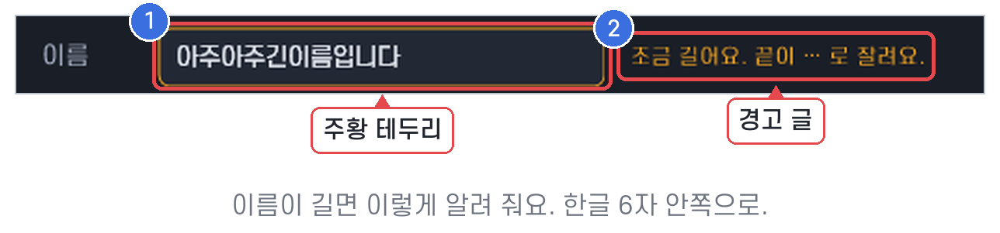
① 이름 칸 ② 알림 글. 이름이 길면 이렇게 주황 테두리와 “조금 길어요. 끝이 … 로 잘려요.”가 나와요. 한글 6자 안쪽으로 써요.
누르기 대상 칸 옆 자세히…를 눌러요. 보이는 것 “사이트 열기 · 자세한 설정” 창이 열려요. 맨 위에 “어느 브라우저로 열까요?”가 있어요. 누르기엣지를 눌러요(크롬을 쓰면 크롬) → 확인.
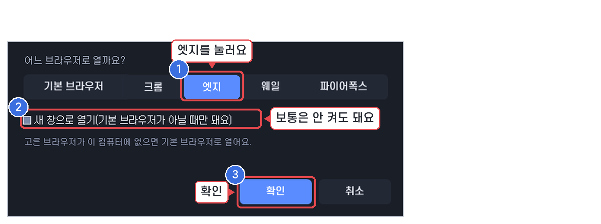
① 엣지 ② 새 창으로 열기 — 보통은 켜지 않아도 돼요 ③ 확인
보이는 것 창이 닫혀요. 대상 칸 아래 글이 “자세한 설정: 엣지”로 바뀌어요. 자세히… 단추에 작은 점이 찍혀요. 점은 “자세한 설정이 있어요”라는 뜻이에요.
누르기 아이콘을 바꿔요. 지금은 파워셸 그림이 그대로예요. 칸 설정 왼쪽 아이콘 바꾸기 ▾ → 사이트 아이콘 받기를 눌러요. 보이는 것 잠깐 뒤 나이스 사이트의 작은 아이콘이 들어가요. 인터넷이 있어야 해요.
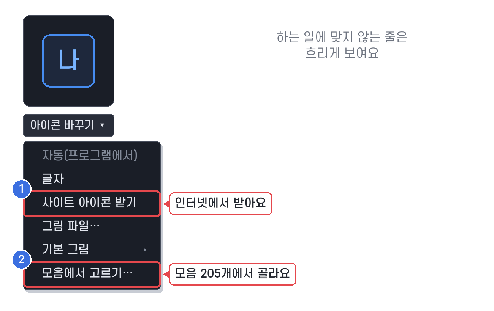
① 사이트 아이콘 받기 ② 모음에서 고르기… 하는 일에 맞지 않는 줄은 흐리게 보여요.
다른 길아이콘 바꾸기 ▾ → 모음에서 고르기… → 위 ‘찾기’ 칸에 나이스 를 쳐요 → 그림을 하나 누르고 고르기. 모음 창은 과정 9에서 자세히 봐요.
누르기▶ 눌러 보기를 눌러요. 보이는 것 엣지가 열리고 나이스 첫 화면이 보여요. 보드가 없어도 돼요. 확인했으면 엣지 창을 닫아요.
잘 됐는지 확인 세 가지를 봐요. ① 6번 칸 이름이 ‘나이스’예요. ② 대상 칸 아래에 “자세한 설정: 엣지”가 보여요. ③ ▶ 눌러 보기로 엣지에서 나이스가 열려요.
이렇게 안 되면
엣지가 아닌 다른 인터넷 창이 열려요 → 고른 브라우저가 이 컴퓨터에 없으면 기본 브라우저(늘 쓰는 인터넷 창)로 열어요. 고장이 아니에요.
“먼저 사이트 주소를 넣어 주세요.” 창이 떠요 → 3번 단계(주소 넣기)를 먼저 해요.
“사이트 아이콘을 받지 못했어요(인터넷 연결을 확인해 주세요). 글자 아이콘으로 둘게요.” 창이 떠요 → 인터넷을 확인해요. 글자 아이콘 그대로 두어도 되고, 모음에서 골라도 돼요.
이름 옆에 빨간 글 “이 글자는 보드에 나오지 않아요: …”가 보여요 → 글 끝에 나온 글자(특수 기호, 그림 문자 등)를 이름에서 빼요.
나이스가 아닌 엉뚱한 쪽이 열려요 → 주소에 틀린 글자가 있어요. 3번 단계를 다시 해요.
개인정보 지키기 업무 사이트의 아이디·비밀번호는 칸에 넣지 마세요. ‘글자 넣기’로 비밀번호를 넣게 만들지도 마세요. 로그인은 늘 직접 해요.
과정 7따라 하기③ ‘화면 캡처’ 단축키 눌러서 넣기
이 과정의 목표 2번 칸(Claude)을 ‘화면 캡처’ 칸으로 바꿔요. 보드 단추를 누르면 Win+Shift+S가 눌려요.
걸리는 시간 약 5분 · 필요한 것: 꾸미기 창, 키보드
단축키란 여러 키를 함께 눌러 일을 시키는 방법이에요. 예를 들어 Ctrl+C는 복사예요. 보드 단추를 누르면 컴퓨터가 이 키를 대신 눌러 줘요. Win+Shift+S를 누르면 화면 일부를 그림으로 찍는 도구가 나와요.
더 짧은 길(익숙해지면) 찾기 칸에 캡처 를 쳐요. ‘컴퓨터 조작’ 묶음의 ‘화면 캡처’ 줄을 2번 칸에 끌어 놓으면 똑같이 들어가요. 처음이면 아래 1번 단계부터 차례로 해요.
누르기 보드 모양에서 2번 칸 Claude를 눌러요 → ‘이름’ 칸의 글을 지우고 화면 캡처 라고 쳐요. 보이는 것 보드 모양 2번 칸 아래 글이 ‘화면 캡처’로 바뀌어요.
누르기 ‘하는 일’ 줄에서 단축키 누르기를 눌러요. 보이는 것 대상 칸 옆 단추가 눌러서 넣기로 바뀌어요.
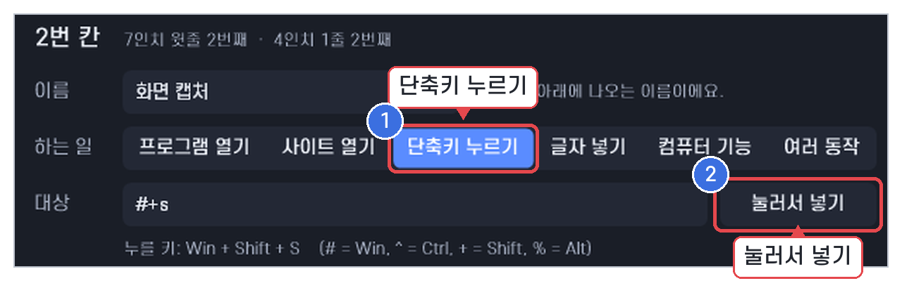
① 단축키 누르기 ② 눌러서 넣기. 그림은 다 넣은 뒤의 모습이에요. 지금은 대상 칸에 다른 글이 남아 있어요.
지우기 대상 칸에는 원래 글(claude:)이 남아 있어요. 대상 칸을 누르고 Ctrl+A → Delete로 지워요. 보이는 것 대상 칸 아래에 “[눌러서 넣기]를 누르고 키보드에서 단축키를 그대로 눌러요.”가 보여요.
누르기눌러서 넣기를 눌러요. 보이는 것 “단축키 눌러서 넣기” 창이 열려요. 가운데 큰 칸에 “여기서 키를 누르세요”가 보여요.
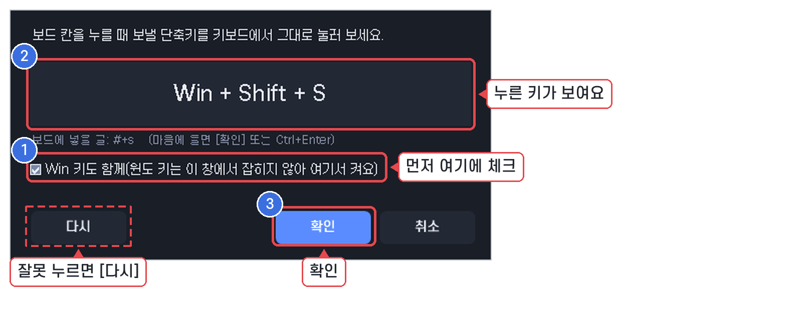
① Win 키도 함께 ② 누른 키가 보이는 곳 ③ 확인. 그림은 키를 다 누른 뒤의 모습이에요. 처음에는 가운데에 “여기서 키를 누르세요”만 보여요.
누르기 먼저 마우스로 “Win 키도 함께(윈도 키는 이 창에서 잡히지 않아 여기서 켜요)” 칸을 눌러 체크해요. 까닭Win 키는 윈도가 먼저 가져가요. 그래서 이 창은 Win 키를 못 받아요. 체크가 Win 키를 대신해요.
누르기 키보드에서 Shift를 누른 채로 S를 눌러요. 보이는 것 가운데에 “Win + Shift + S”가 보여요. 그 아래에 “보드에 넣을 글: #+s”가 보여요.
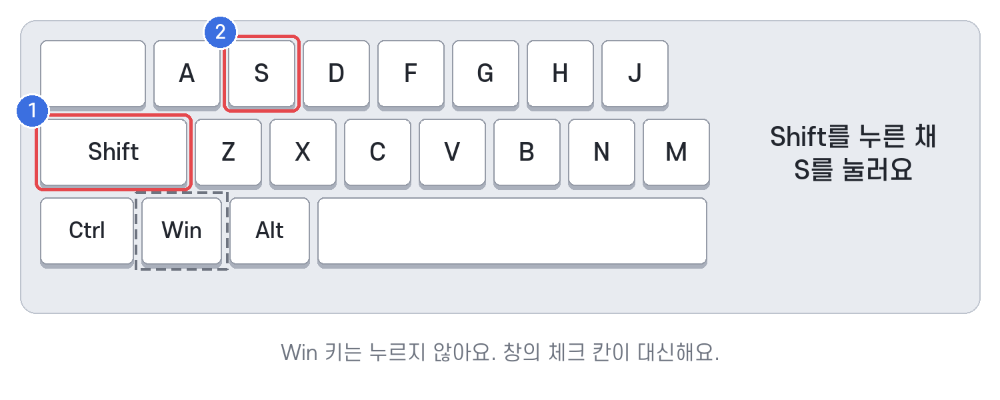
① Shift를 누른 채 ② S를 눌러요. Win 키는 체크로 대신해요.
누르기확인을 눌러요. 보이는 것 창이 닫혀요. 대상 칸에 #+s 가 들어가요. 그 아래에 “누를 키: Win + Shift + S”가 보여요.
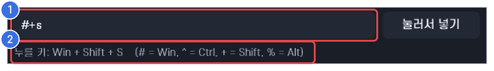
① 대상 칸의 #+s ② 읽기 쉬운 글 “누를 키: Win + Shift + S”
누르기 아이콘을 바꿔요. 아이콘 바꾸기 ▾ → 글자를 눌러요. 보이는 것 이름 첫 글자 ‘화’로 만든 아이콘이 들어가요. 보드 모양 2번 칸도 바뀌어요.
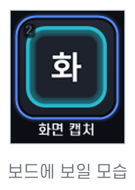
보드에 보일 모습
누르기▶ 눌러 보기를 눌러요. 보이는 것 꾸미기 창이 잠깐 아래로 내려가요. 화면이 살짝 어두워지고, 위쪽에 캡처 도구가 나와요. 지금은 찍지 않을 거라 Esc를 눌러 취소해요. 1~2초 뒤 꾸미기 창이 다시 올라와요.
기호를 직접 쓰고 싶으면#은 Win, ^는 Ctrl처럼 기호로 직접 쓸 수도 있어요. 기호표는 간단 설명서 7장(8쪽)에 있어요.
잘 됐는지 확인 대상 칸 아래에 “누를 키: Win + Shift + S”가 보여요. 그리고 ▶ 눌러 보기를 누르면 캡처 도구가 나와요.
이렇게 안 되면
키를 잘못 눌렀어요 → 창의 다시를 누르고 다시 눌러요.
“이 키는 넣을 수 없어요. 다른 키를 눌러 주세요.”가 보여요 → 한/영 키, 한자 키 같은 키는 넣을 수 없어요. 다른 키를 눌러요.
가운데에 “Shift + S”만 보여요 → 5번 단계의 체크를 안 했어요. 체크하면 바로 “Win + Shift + S”로 바뀌어요.
창을 열자마자 가운데에 이상한 글이 보여요 → 3번 단계에서 남은 글을 안 지웠어요. 다시를 누르고 5~6번 단계를 해요.
키보드로 창을 닫고 싶어요 → Ctrl+Enter는 확인, Shift+Esc는 취소예요. 이 창에서 Enter나 Esc만 누르면 그 키가 단축키로 들어가요.
보드 단추로 다른 단축키를 눌렀는데 아무 일이 없어요 → 단축키는 맨 앞에 있는 창에 들어가요. 예를 들어 한글에 Ctrl+S(저장)를 보내려면, 한글 창을 먼저 한 번 눌러 둬요. 화면 캡처는 어느 창에서나 돼요.
과정 8따라 하기④ ‘수업 시작’ 여러 동작 만들기
이 과정의 목표 1번 칸 하나로 세 가지 일을 차례대로 하게 만들어요. ① 파워포인트 열기 ② 나이스 열기 ③ 소리 끄기예요. 일 사이사이에 기다리는 시간(2초, 1초)을 둬요.
걸리는 시간 약 10분 · 필요한 것: 꾸미기 창, 파워포인트가 깔린 컴퓨터
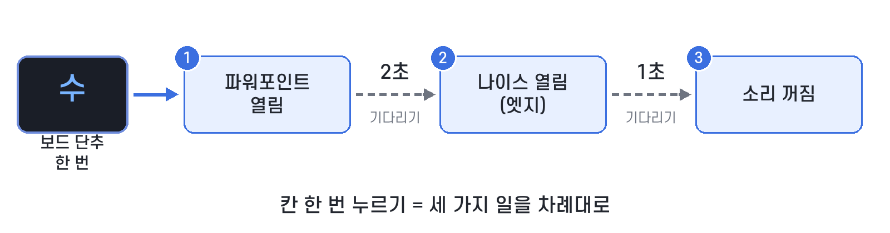
단추를 한 번 누르면 세 가지 일이 차례대로 일어나요. 회색 점선은 기다리는 시간이에요.
누르기 보드 모양에서 1번 칸 탐색기를 눌러요 → ‘이름’ 칸의 글을 지우고 수업 시작 이라고 쳐요. 보이는 것 보드 모양 1번 칸 아래 글이 ‘수업 시작’으로 바뀌어요.
누르기 ‘하는 일’ 줄에서 여러 동작을 눌러요. 보이는 것 “여러 동작 · 수업 시작” 창이 저절로 열려요. 뒤쪽 칸 설정에는 동작 차례 고치기… 단추가 생겨요. 나중에 이 창을 다시 열 때 이 단추를 눌러요.
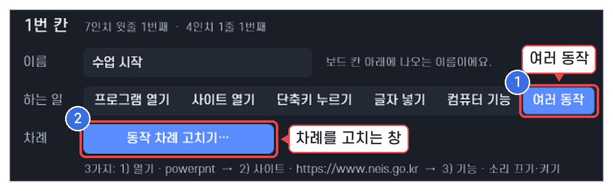
① 여러 동작 ② 동작 차례 고치기… (창을 다시 열 때). 그림은 다 만든 뒤의 모습이라 아래에 요약이 보여요.
읽기 창 위쪽 목록을 봐요. 보이는 것 1번 줄에 “열기 · explorer”가 이미 들어 있어요(explorer는 윈도가 탐색기를 찾는 이름이에요). 이 칸이 원래 하던 일(탐색기 열기)이 첫 동작으로 옮겨진 거예요.
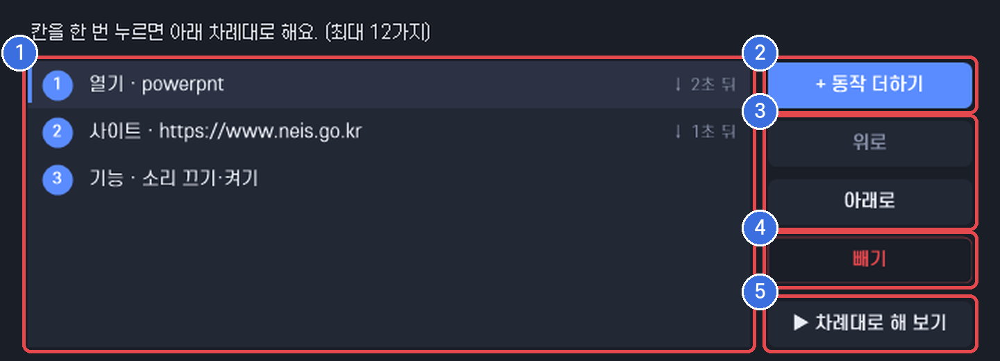
① 동작 목록 ② + 동작 더하기 ③ 위로·아래로(차례 바꾸기) ④ 빼기 ⑤ ▶ 차례대로 해 보기
누르기 1번 줄을 눌러요. 아래 ‘고른 동작’에서 프로그램 열기가 파란지 봐요 → 대상 칸의 글을 지우고 powerpnt 를 그대로 쳐요(윈도가 파워포인트를 찾는 이름이에요. 치기 어려우면 찾아보기…로 파워포인트를 골라도 돼요) → ‘다음 동작까지 기다리기’ 줄에서 2초를 눌러요. 보이는 것 1번 줄이 “열기 · powerpnt”로 바뀌어요.
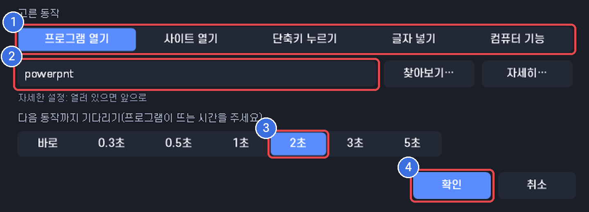
① 고른 동작의 하는 일 ② 대상 칸 ③ 기다리기 2초 ④ 확인
누르기+ 동작 더하기를 눌러요. 보이는 것 작은 메뉴가 펼쳐져요. ‘프로그램 열기 · 사이트 열기 · 단축키 누르기 · 글자 넣기 · 컴퓨터 기능’ 다섯 줄이에요. 누르기사이트 열기를 눌러요. 보이는 것 1번 줄 바로 아래에 2번 줄 “사이트 · (비어 있어요)”가 생겨요. 아직 비어 있어서 주황 글로 보여요.
누르기 아래 대상 칸을 눌러 https://www.neis.go.kr 를 그대로 쳐요. 보이는 것 2번 줄이 “사이트 · https://www.neis.go.kr”로 바뀌어요. 기다리기는 처음부터 1초로 골라져 있어요. 그대로 둬요.
누르기 대상 칸 오른쪽 자세히… → 엣지 → 확인. 보이는 것 브라우저 고르는 창이 닫혀요. 과정 6의 5번 단계와 같은 창이에요.
누르기 2번 줄이 골라진 채로 + 동작 더하기 → 컴퓨터 기능을 눌러요. 보이는 것 3번 줄 “기능 · 바탕화면 보기”가 생겨요. 아래 대상 칸 자리에 “바탕화면 보기”라고 적힌 펼침 단추(누르면 목록이 아래로 펼쳐지는 단추)가 보여요. 누르기 그 펼침 단추를 눌러요 → 목록에서 소리 끄기·켜기를 눌러요. 보이는 것 3번 줄이 “기능 · 소리 끄기·켜기”로 바뀌어요.
읽기 목록을 다시 봐요. 1번 줄 오른쪽에 “↓ 2초 뒤”, 2번 줄 오른쪽에 “↓ 1초 뒤”가 보여요.
차례가 틀렸으면 → 줄을 누르고 위로나 아래로.
잘못 넣은 줄이 있으면 → 그 줄을 누르고 빨간 빼기.
누르기▶ 차례대로 해 보기를 눌러요. 보이는 것 파워포인트가 열려요 → 2초 뒤 엣지에서 나이스가 열려요 → 1초 뒤 소리가 꺼져요.
소리를 다시 켜려면 작업 표시줄(화면 맨 아래 막대) 오른쪽의 스피커 그림을 눌러 켜요(화면에 따라 조금 다를 수 있어요). ‘소리 끄기·켜기’는 누를 때마다 끄기와 켜기가 번갈아 돼요. 그래서 소리가 이미 꺼져 있었다면 이번에는 켜져요. 파워포인트와 엣지 창은 닫아요.
누르기 창 아래 확인을 눌러요. 보이는 것 창이 닫혀요. 칸 설정 아래에 “3가지: 1) 열기 · powerpnt → 2) 사이트 · https://www.neis.go.kr → 3) 기능 · 소리 끄기·켜기”가 보여요.
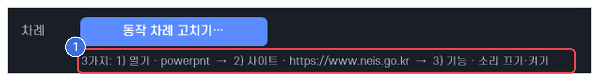
① 칸 설정 아래의 차례 요약. 그림은 다른 칸의 예예요.
누르기 아이콘을 바꿔요. 아이콘 바꾸기 ▾ → 글자. 보이는 것 ‘수’ 글자 아이콘이 들어가요. 보드 모양 1번 칸도 바뀌어요.
잘 됐는지 확인 칸 설정 아래에 “3가지: …” 요약이 보여요. 그리고 ▶ 눌러 보기를 누르면 세 가지가 차례대로 일어나요.
이렇게 안 되면
“2번째 동작이 비어 있어요. [동작 차례 고치기]에서 채워 주세요.”가 떠요 → 동작 차례 고치기…를 눌러 창을 다시 열어요. 주황 글로 보이는 줄을 눌러 대상을 채워요.
나이스가 먼저 뜨고 파워포인트가 그 위를 가려요 → 파워포인트가 뜨는 데 시간이 더 걸려서 그래요. 1번 줄의 기다리기를 2초에서 3초로 바꿔요.
“열지 못했어요: …”가 떠요 → 이 컴퓨터에 파워포인트가 없거나 다른 자리에 있어요. 1번 줄을 누르고 찾아보기…로 프로그램을 골라요.
+ 동작 더하기가 흐려서 안 눌려요 → 한 칸에는 12가지까지만 넣을 수 있어요.
창에서 취소를 눌렀어요 → 그 창에서 고친 것은 모두 사라져요. 동작 차례 고치기…로 다시 열어 4번 단계부터 해요.
과정 9따라 하기⑤ 내 그림·인공지능 아이콘 넣기
이 과정의 목표 3번 칸(제미나이)의 아이콘을 내가 만든 그림으로 바꿔요. 그림은 인공지능으로 만들어요.
걸리는 시간 약 10분 · 필요한 것: 꾸미기 창, 그림을 만들어 주는 인공지능(제미나이·캔바 등)
누르기 보드 모양에서 3번 칸 제미나이를 눌러요. 보이는 것 칸 설정 왼쪽에 큰 아이콘 상자가 있어요. 그 아래에 아이콘 바꾸기 ▾, 또 그 아래에 “지금: 기본 그림”이 보여요.
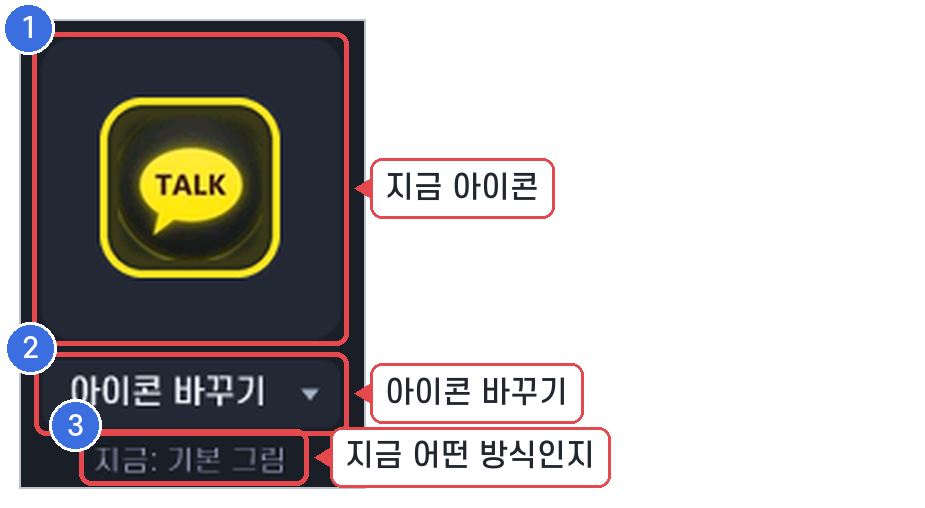
① 아이콘 상자 ② 아이콘 바꾸기 ③ 지금 쓰는 방식. 그림은 다른 칸(카카오톡)의 예예요. 3번 칸도 같은 모양이에요.
인공지능 열기 인터넷 창에서 그림을 만들어 주는 인공지능(제미나이·캔바 등)에 들어가요. 대부분 로그인(내 계정으로 들어가기)이 필요해요. 로그인은 직접 해요. 보이는 것 아래쪽에 글을 쓰는 칸이 있어요.
줄 말 복사하기 아래 상자의 글을 복사해요. 첫 글자 앞을 마우스로 누른 채 마지막 글자까지 끌어서 고르고 → Ctrl+C. 종이로 보고 있으면 그대로 따라 쳐도 돼요.
[출석부] 를 나타내는 앱 아이콘 기호 하나를 그려 줘.
정사각형 1024x1024, 배경은 완전히 투명(PNG).
가운데에 기호 하나만, 화면의 80% 크기. 굵은 선의 평면 스타일,
색은 [밝은 초록] 한 가지와 흰색만. 글씨·그림자·배경 무늬는 넣지 마.
아주 작게(72픽셀) 줄여도 알아볼 수 있게 단순하게.
붙여 넣고 고치기 인공지능의 글 쓰는 칸을 눌러요 → Ctrl+V → [ ] 안의 글만 내 것으로 바꿔요(예: [출석부] → [시간표]). 괄호 [ ]는 지워도 되고 그대로 둬도 돼요 → Enter. 보이는 것 잠시 뒤 인공지능이 그림을 만들어 줘요.
그림 저장하기 그림 위에서 오른쪽 클릭 → ‘다른 이름으로 이미지 저장’(또는 그림 옆 받기 단추)을 눌러요 → 저장 창 왼쪽에서 ‘바탕 화면’ → 저장. 메뉴 이름은 인터넷 창과 인공지능에 따라 조금 달라요. 보이는 것 바탕화면에 그림 파일이 생겨요. 이름 끝이 .png 면 좋아요.
끌어 놓기 끌기가 어렵다면 이 단계 대신 아래 ‘다른 길 ①(메뉴로 그림 고르기)’을 쓰세요. 더 쉬워요.
탐색기를 열고 왼쪽에서 ‘바탕 화면’을 눌러요. 탐색기 창 맨 위 제목 띠를 화면 왼쪽 끝까지 끌어 놓으면 창이 화면 반쪽을 차지해요. 오른쪽에 나오는 작은 창들 가운데 꾸미기 창을 누르면 두 창이 나란히 보여요 → 그림 파일을 마우스로 누른 채, 꾸미기 창 보드 모양의 3번 칸 위로 끌어서 놓아요. 보이는 것 “이 그림을 3번 칸 아이콘으로 넣을까요?” 물음 창이 떠요.
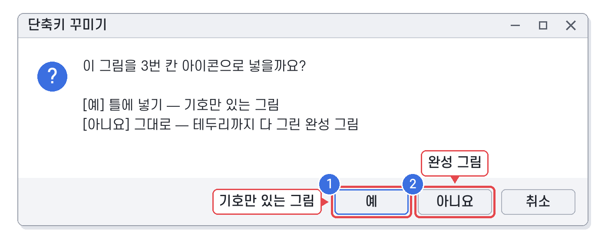
① 예 = 기호만 있는 그림 ② 아니요 = 테두리까지 다 그린 완성 그림
누르기 그림에 맞게 골라요.
가운데 기호 하나만 있는 그림 → 예(틀에 넣기). 다른 칸과 같은 어두운 테두리를 씌워 줘요.
테두리와 바탕까지 다 그린 그림 → 아니요(그대로).
넣지 않으려면 → 취소.
같은 그림을 ‘예(틀에 넣기)’와 ‘아니요(그대로)’로 넣었을 때
보이는 것 보드 모양 3번 칸의 그림이 바뀌어요. 아이콘 상자 아래 글이 “지금: 그림 파일”로 바뀌어요(‘아니요’를 골랐으면 “지금: 그림 그대로”). 맨 아래 왼쪽에 “3번 칸 아이콘을 바꿨어요.”가 나와요.
다른 길 ① 메뉴로 그림 고르기
아이콘 바꾸기 ▾ → 그림 파일…을 눌러요. “아이콘으로 쓸 그림 고르기” 창이 열려요. 왼쪽에서 ‘바탕 화면’을 누르고 → 그림 파일을 누르고 → 열기. “이 그림을 어떻게 넣을까요?” 물음이 뜨면 7번 단계처럼 골라요.
아래 “이름·하는 일도 같이 넣기(빈 칸이면 늘 넣음)”는 끈 채로 두세요. 그래야 아이콘만 바뀌어요.
잘 됐는지 확인 보드 모양 3번 칸 그림이 내 그림으로 바뀌었어요. 아이콘 상자 아래에 “지금: 그림 파일” 또는 “지금: 그림 그대로”가 보여요.
이렇게 안 되면
“이 그림은 열 수 없어요.”가 떠요 → 그림을 이름 끝이 .png 나 .jpg 인 파일로 다시 저장해요.
그림 둘레에 하얀 네모가 보여요 → 그림 바탕이 투명하지 않아서 그래요. 인공지능에게 “배경을 투명하게”를 다시 부탁하거나, 캔바의 ‘배경 제거’를 써요.
보드 칸에서 너무 작거나 흐려 보여요 → 기호 하나만, 굵은 선으로 다시 만들어요. 알맞은 크기와 모양은 간단 설명서 10장(12쪽) 표에 있어요.
끌어 놓았는데 물음 창이 안 떠요 → 그림을 칸 바로 위에서 놓았는지 봐요. 안 되면 ‘다른 길 ①’로 넣어요.
그림 쓸 때 지킬 것 회사 로고를 그대로 베끼지 마세요. 그 회사 색의 글자 한두 개로 만들면 돼요.
과정 10한 번에 채우기와 아이콘 모양
이 과정의 목표 16칸을 묶음으로 한 번에 채워 보고, 아이콘 모양(테마)을 바꿔 봐요. 끝나면 과정 5~9에서 꾸민 칸으로 되돌려요.
걸리는 시간 약 5분 · 필요한 것: 꾸미기 창
먼저 읽어 주세요 한 번에 채우기를 하면 지금 16칸이 모두 바뀌어요. 과정 5~9에서 꾸민 칸도 바뀌어요. 그래서 1번 단계에서 먼저 저장하고, 2번 단계에서 파일로도 지켜 둬요.
저장하기 꾸미기 창 맨 아래 오른쪽의 저장하고 보드에 보내기를 눌러요(Ctrl+S). 보이는 것 위 띠의 “저장 안 함”이 사라져요. 보드가 꽂혀 있으면 보드로도 가요(1분쯤). 보드가 없으면 다음에 꽂을 때 저절로 가요.
“3번 칸: …” 같은 창이 뜨면 과정 11의 ‘먼저, 저장 전 표시 읽기’를 보고 그 칸을 고친 뒤 다시 눌러요.
파일로 지켜 두기 위 띠의 더보기 ▾ → 내보내기…를 눌러요. 보이는 것 “단축키 설정 내보내기” 창이 열려요. 파일 이름은 ‘알림판_단축키_’ 뒤에 오늘 날짜 네 자리가 붙어 있어요. 누르기 왼쪽에서 ‘바탕 화면’을 눌러요 → 이름은 그대로 두고 저장. 보이는 것 맨 아래 왼쪽에 “내보냈어요: …”가 나와요. 바탕화면에 압축 파일(여러 파일을 하나로 묶은 파일)이 하나 생겨요. 내보내기는 과정 12에서 더 자세히 봐요.
알아 두기 위 띠에는 단추 세 개가 있어요.
위 띠의 세 단추: ① 한 번에 채우기 ② 아이콘 모양 ③ 더보기누르기 ① 한 번에 채우기 ▾를 눌러요. 보이는 것 메뉴가 펼쳐져요. ‘이 컴퓨터에 깔린 프로그램으로 · 수업용 · 업무용 · 발표·원격수업용’ 네 줄이에요.
한 번에 채우기 메뉴의 네 줄. ① 수업용을 눌러요.
누르기수업용 (한글·PPT·발표 넘기기·타이머·소리)를 눌러요. 보이는 것 “한 번에 채우기” 물음 창이 떠요. “16칸을 아래처럼 바꿀까요? (지금 칸은 지워져요. 저장을 눌러야 보드로 가요)” 아래에 들어갈 칸 이름이 줄지어 보여요. 누르기 칸 이름을 읽어 보고 예.
① 예를 누르면 16칸이 바뀌어요. 그만두려면 아니요.
보이는 것 보드 모양 16칸이 수업용으로 바뀌어요. 맨 아래에 “16칸을 채웠어요. …”가 나와요.
수업용은 모든 칸에 대상이 들어 있어요. 다른 묶음에는 주소가 빈 칸(예: ‘학교 누리집’)이 있을 수 있어요. 그런 칸은 눌러서 대상 칸에 주소를 넣어요. 빈 칸인지 모르겠으면 ▶ 눌러 보기를 눌러 봐요. 비어 있으면 “사이트 주소를 넣어 주세요.” 같은 창이 떠요.
누르기 위 띠의 아이콘 모양: 기본(다크) ▾를 눌러요 → 여섯 가지(기본(다크) · 따뜻함 · 남색밤 · 밝은종이 · 고대비 · 숲초록) 가운데 따뜻함을 눌러요. 보이는 것 16칸의 아이콘 색이 바뀌어요. 맨 아래에 “모음 아이콘 16개를 '따뜻함' 모양으로 바꿨어요. 저장하면 보드로 가요.”가 나와요. 위 띠 단추 글은 “아이콘 모양: 따뜻함”이 돼요.
위는 기본(다크), 아래는 따뜻함이에요. 보드의 색 테마와 같은 것을 고르면 잘 어울려요.
되돌리기 이제 과정 5~9에서 꾸민 칸으로 돌아가요. 더보기 ▾ → 가져오기…를 눌러요. 보이는 것 “단축키 설정 가져오기” 창이 열려요. 누르기 왼쪽 ‘바탕 화면’ → 2번 단계에서 만든 파일 → 열기. 보이는 것 “저장하지 않은 고친 내용이 있어요. 가져오면 지금 16칸이 바뀌고 고친 내용은 사라져요. 가져올까요?”가 떠요 → 예. 보이는 것 16칸이 2번 단계 때 모습으로 돌아와요. 맨 아래에 “가져왔어요. …”가 나와요. 아이콘 모양도 처음대로 하려면 아이콘 모양: 따뜻함 ▾에서 기본(다크)를 골라요.
다른 되돌리기닫기 → 아니요(저장 안 함)로 닫아도 돼요. 그러면 1번 단계에서 저장한 모습으로 돌아가요. 여기서는 과정 12 연습을 겸해 가져오기로 되돌렸어요.
잘 됐는지 확인 4번 단계 뒤 보드 모양 16칸이 수업용 이름으로 바뀌었어요. 6번 단계 뒤 위 띠 단추가 “아이콘 모양: 따뜻함”이에요. 7번 단계 뒤 16번 ‘한글’, 6번 ‘나이스’, 2번 ‘화면 캡처’, 1번 ‘수업 시작’, 3번 내 그림이 다시 보여요.
이렇게 안 되면
이 컴퓨터에 깔린 프로그램으로를 했는데 원하는 프로그램이 빠졌어요 → 이 컴퓨터에 깔린 것만 넣어요. 빠진 칸은 과정 5처럼 끌어다 넣어요.
아이콘 모양을 바꿔도 그대로인 칸이 있어요 → 모음에서 고른 아이콘만 바뀌어요. 내 그림, 글자 아이콘, 기본 그림은 그대로예요.
1번·2번 단계를 안 하고 채워 버렸어요 → 닫기 → 아니요로 닫으면 마지막으로 저장한 모습으로 돌아가요. 다만 저장하지 않았던 칸은 다시 해야 해요.
과정 11보드로 보내고 확인
이 과정의 목표 과정 5~10에서 고친 것을 한 번에 저장해서 보드로 보내요. 그리고 보드 단추를 눌러 확인해요.
걸리는 시간 약 5분(보내는 데 1분쯤) · 필요한 것: 꾸미기 창, 컴퓨터에 꽂힌 보드
먼저, 저장 전 표시 읽기
무엇을 고치고 아직 저장하지 않았으면, 꾸미기 창이 표시로 알려 줘요.
① 위 띠의 ‘저장 안 함’ ② 저장 단추 앞의 점
칸 위에 작은 점이 찍히기도 해요. 점의 색마다 뜻이 달라요.
① 주황 점 = 이름이 조금 길어요 ② ③ 빨간 점 = 보드에 없는 글자가 있거나, 이름이 비었어요
점 색
아래 ‘이름’ 칸 밑에 보이는 글
할 일
주황
조금 길어요. 끝이 … 로 잘려요.
그대로 보내도 돼요. 보드에서 이름 끝이 잘려 보여요.
빨강
이 글자는 보드에 나오지 않아요: ★
이름에서 그 글자를 지워요.
빨강
이름을 넣어 주세요.
이름을 써 넣어요.
점 없음
(저장을 누르면 창이 떠요) “3번 칸: 사이트 주소를 넣어 주세요.”, “3번 칸: 무엇을 열지(대상)를 넣어 주세요.”
대상(무엇을 열지)이 비었어요. 주소나 경로(파일이 있는 자리)를 넣어요. 글자 넣기 칸이면 넣을 글을 써요.
저장이 안 되는 두 가지 ① 빨간 점이 남아 있을 때 ② 대상(무엇을 열지)이 빈 칸이 있을 때예요. ②는 칸에 점이 찍히지 않아요. 저장을 누르면 “3번 칸: 이름을 넣어 주세요.”나 “3번 칸: 사이트 주소를 넣어 주세요.”처럼 창이 뜨고, 그 칸이 저절로 골라져요. 창의 확인을 누르고 그 칸을 고쳐요.
저장하고 보내기
보기 보드가 컴퓨터에 꽂혀 있는지 봐요. 알림 영역(작업 표시줄 오른쪽 끝, 시계 옆)의 탭덱 아이콘이 초록이면 돼요(과정 3). 아이콘이 ^ 안에 숨어 있으면 ^를 눌러 봐요.
누르기 꾸미기 창 맨 아래 오른쪽의 저장하고 보드에 보내기를 눌러요. 키보드로는 Ctrl+S 예요.
① 저장하고 보드에 보내기 ② 여기 글이 차례로 바뀌어요
보이는 것 맨 아래 왼쪽 글이 차례로 바뀌어요. 보드 화면 아래 줄도 함께 바뀌어요.
차례
컴퓨터 — 꾸미기 창 맨 아래
보드 — 단축키 화면 아래 줄
1
저장했어요. 보드에 보내요(7인치는 1분쯤 걸려요).
2
보드: 7인치 아이콘 보내는 중 3/16
아이콘 받는 중 3/16
3
보드: 7인치 보드에 보냈어요
✓ 새 단축키를 받았습니다
4
보드: 7인치 연결됨 · 보드와 같음
① 다 받으면 보드 아래 줄에 초록 글 “새 단축키를 받았습니다”가 보여요.
기다리기 7인치는 아이콘 하나에 3~7초 걸려요. 16칸을 다 바꿨으면 1분쯤 걸려요. 그동안 선을 빼지 마세요.
보이는 것 다 보내면 화면 오른쪽 아래에 풍선 알림(잠깐 떴다 사라지는 작은 알림)이 떠요. “7인치 알림판에 새 단축키를 보냈어요”.
① 풍선 알림은 몇 초 뒤 사라져요.
놓쳐도 괜찮아요. 꾸미기 창 맨 아래 글이 “연결됨 · 보드와 같음”이면 다 보낸 거예요.
누르기 이제 보드에서 직접 눌러 봐요.
16번 칸 ‘한글’ → 한글이 열려요.
6번 칸 ‘나이스’ → 고른 브라우저(인터넷 창)로 나이스가 열려요.
2번 칸 ‘화면 캡처’ → 화면이 어두워지고 자를 곳을 고르게 돼요.
1번 칸 ‘수업 시작’ → 과정 8에서 만든 차례대로 일이 일어나요.
3번 칸 → 보드에도 내 그림 아이콘이 보여요.
잘 됐는지 확인 세 가지가 모두 맞으면 끝이에요. ① 꾸미기 창 맨 아래에 “연결됨 · 보드와 같음” ② 보드 아래 줄에 “새 단축키를 받았습니다” ③ 보드 단추를 누르면 그 일이 일어나요.
이렇게 안 되면꾸미기 창 맨 아래 글을 읽고, 아래 표에서 같은 글을 찾아요.
맨 아래에 보이는 글
할 일
저장했어요. 보드를 꽂으면 저절로 보내요.
저장은 됐어요. 보드를 꽂으면 저절로 보내요. 기다리면 돼요.
보드가 연결되지 않았어요
보드가 컴퓨터와 이어지지 않았어요. 과정 3을 다시 해요.
보드가 날씨·시간표를 받는 중이라 기다려요
보드가 다른 일을 하는 중이에요. 끝나면 저절로 보내요.
보내지 못해 멈췄어요 · [저장하고 보드에 보내기]를 다시 눌러 주세요
선을 뺐다가 다시 꽂아요. 아이콘이 초록이 되면 저장하고 보드에 보내기를 다시 눌러요.
이 보드는 아이콘 받기를 못 해요(보드 프로그램을 새로 구워야 해요)
보드 프로그램이 예전 것이에요. 새로 구워야(보드에 프로그램을 새로 넣어야) 해요. 정보 담당 선생님께 부탁해요. 그래도 단추로 프로그램 열기는 돼요.
보드 아래 줄에 “받은 설정이 맞지 않아 기본 아이콘을 씁니다”가 보여요 → 저장하고 보드에 보내기를 한 번 더 눌러요.
처음 상태로 되돌리고 싶을 때
누르기 위 띠의 더보기 ▾ → 기본값으로 되돌리기…를 눌러요.
보이는 것 “16칸을 처음 상태로 되돌릴까요? 보드도 기본 아이콘으로 돌아가요.”라고 물어요. 예를 눌러요.
보드에서 바로 되돌릴 수도 있어요. 보드 단축키 화면 왼쪽 아래 기본 아이콘을 3초 안에 두 번 눌러요. 보드 아래 줄에 “기본 아이콘으로 되돌렸습니다”가 보여요.
되돌리기 전에 지금 꾸민 16칸이 사라져요. 아깝다면 먼저 과정 12처럼 내보내 두세요.
연습한 16번 칸 15번 칸에도 한글이 있으니, 과정 5에서 연습으로 바꾼 16번 칸은 원래대로 돌려도 돼요. 16번 칸을 고르고 찾기 칸에 바탕화면 을 쳐요 → 나온 ‘바탕화면’ 줄을 16번 칸에 끌어 놓아요 → 저장하고 보드에 보내기.
과정 12다른 선생님께 나누기
이 과정의 목표 꾸민 16칸을 파일 하나로 만들어 옆 반 선생님께 줘요. 받은 선생님은 그 파일을 가져와 보드로 보내요.
걸리는 시간 약 5분 · 필요한 것: 내 꾸미기 창, 파일을 보낼 메신저나 메일
내보내기 → 파일 하나 → 메신저로 보내기 → 가져오기 → 저장하고 보내기
주는 사람 — 내보내서 보내기
보내기 전에 살펴요 ‘글자 넣기’ 칸에 전화번호나 주소 같은 개인 정보가 있나요? 있으면 그 칸을 먼저 비우고 내보내요. 파일 안에 그 글이 그대로 들어가요.
누르기 꾸미기 창 위 띠의 더보기 ▾를 눌러요. → 보이는 것 메뉴가 펼쳐져요. 내보내기…를 눌러요.
① 내보내기… ② 가져오기…
보이는 것 “단축키 설정 내보내기” 창이 열려요. 누르기 왼쪽 목록에서 바탕 화면을 눌러요.
① 바탕 화면 ② 파일 이름(오늘 날짜가 붙어 있어요) ③ 저장. 창 모양은 컴퓨터에 따라 조금 다를 수 있어요.
보이는 것 파일 이름 칸에 알림판_단축키_1027.zip처럼 오늘 날짜가 붙은 이름이 이미 들어 있어요. 그대로 두고 저장을 눌러요.
보이는 것 꾸미기 창 맨 아래에 “내보냈어요: …”가 잠깐 보여요. 바탕화면에 그 이름의 파일이 생겨요.
누르기 이 파일을 메신저나 메일에 붙여 보내요. 파일을 풀지 말고 그대로 보내요.
내 것도 지켜 두기 학교 컴퓨터는 바뀌거나 처음 상태로 돌아갈 수 있어요. 내보낸 파일을 USB 메모리에 넣어 두세요. 나중에 가져오기로 금방 되살릴 수 있어요.
과정 12다른 선생님께 나누기(이어서)
받는 사람 — 가져와서 보드로 보내기
먼저 받는 선생님 컴퓨터에도 탭덱을 깔아 두세요(과정 2). 탭덱 아이콘을 두 번 클릭해 꾸미기 창이 열리면 준비가 된 거예요.
누르기 받은 파일을 바탕화면에 저장해요. 이 파일은 압축 파일(여러 파일을 하나로 묶은 것, 이름 끝이 .zip)이에요. 풀지 마세요.
누르기 꾸미기 창 더보기 ▾ → 가져오기…를 눌러요.
보이는 것 “단축키 설정 가져오기” 창이 열려요. 내보내기 창과 모양이 비슷해요. 누르기바탕 화면 → 받은 파일 → 열기.
보이는 것 저장하지 않은 고친 내용이 있으면 “저장하지 않은 고친 내용이 있어요. 가져오면 지금 16칸이 바뀌고 고친 내용은 사라져요. 가져올까요?”라고 물어요. 괜찮으면 예.
보이는 것 16칸이 받은 대로 바뀌어요. 맨 아래에 “가져왔어요. 확인하고 [저장하고 보드에 보내기]를 누르세요. (이 컴퓨터에 없는 프로그램 칸은 대상을 고쳐 주세요)”가 보여요.
누르기 칸을 하나씩 골라 ▶ 눌러 보기를 눌러요. 열리지 않는 칸은 과정 5처럼 대상(무엇을 열지)을 고쳐요. 보낸 컴퓨터와 프로그램 자리가 다를 수 있어서 그래요.
누르기 다 됐으면 저장하고 보드에 보내기를 눌러요(과정 11).
잘 됐는지 확인 받은 선생님의 꾸미기 창 16칸이 보낸 선생님 것과 같아요. 저장하고 보낸 뒤 보드 아래 줄에 “새 단축키를 받았습니다”가 보여요.
이렇게 안 되면
“알림판 단축키 설정 파일이 아니에요(deck.json 이 없어요).”(deck.json은 설정 파일 이름이에요) → 압축을 푼 폴더를 골랐어요. 받은 파일을 그대로 골라요.
“가져오지 못했어요: zip 파일이 깨져 있어요”(zip = 압축 파일) → 파일이 받는 중에 망가졌어요. 다시 받아요.
가져왔는데 보드는 그대로예요 → 아직 저장하고 보드에 보내기를 누르지 않았어요.
과정 13문제 해결 순서도
이 과정의 목표 증상을 고르고, 물음에 ‘예/아니요’로 따라가요. 끝에 할 일이 나와요.
순서도에서 마름모는 물음, 둥근 네모는 할 일이에요. 초록 화살표는 ‘예’, 빨간 화살표는 ‘아니요’예요. 간단 설명서 15장(14쪽) 표는 짧은 답이고, 이 과정은 어디를 보면 되는지 차례로 알려 줘요.
먼저, 기록 보기
탭덱은 하는 일을 날마다 적어 둬요. 이것을 기록이라고 해요. 막히면 기록의 맨 아래 줄을 보면 까닭을 알 수 있어요.
누르기 알림 영역의 탭덱 아이콘을 오른쪽 클릭 → 기록 보기.
보이는 것 메모장이 열려요. 한 줄에 하나씩, 앞에 날짜와 시각이 있어요.
누르기Ctrl+End를 눌러 맨 아래로 가요. 마지막 몇 줄을 읽어요.
① 맨 아래 줄을 봐요. 앞의 날짜·시각 다음이 하는 일이에요.
기록에 보이는 글(앞부분)
뜻
포트 열어 봄: …
연결 구멍(포트)을 열어 보드를 찾아봤어요. 컴퓨터가 보드를 보고 있어요.
알림판 확인: … (7인치)
보드와 연결됐어요.
알림판 아님(답 없음, 1분 뒤 다시)
보드가 대답하지 않아요. 잠시 뒤 다시 찾아요.
열기: …
보드 단추가 눌려서 그 일을 했어요.
열기 실패: … (까닭)
열려고 했는데 못 했어요. 괄호 안이 까닭이에요.
‘…’ 자리의 글은 컴퓨터마다 달라요.
가. 탭덱 아이콘이 회색에서 안 바뀌어요
순서도 가 — 컴퓨터와 보드가 이어지지 않을 때. 같은 내용을 다음 쪽에 글로도 적었어요.
가. 순서도를 글로 읽기
작업 표시줄(화면 맨 아래 막대)에 탭덱 아이콘이 없어요(^ 안도 봐요) → 시작 메뉴에서 ‘탭덱’을 눌러 켜요. 그래도 없으면 학교 백신(나쁜 프로그램을 막는 프로그램)이 막은 거예요. 예외 목록에 넣어 달라고 해요.
아이콘이 주황이에요 → 잠깐 멈춘 상태예요. 아이콘 오른쪽 클릭 → 잠깐 멈추기(보드 굽기 전에)를 다시 눌러 꺼요.
7인치는 ‘UART’라고 적힌 단자(선을 꽂는 구멍)에 꽂았나요? 아니면 바꿔 꽂아요.
데이터 케이블인가요? 그 선으로 휴대폰을 컴퓨터에 꽂아 사진이 보이면 데이터 케이블이에요. 충전만 되는 선이면 바꿔요.
컴퓨터의 다른 USB 구멍에 꽂아 봐요.
기록에 “포트 열어 봄”(연결 구멍을 열어 봤다는 뜻)이 없어요 → 컴퓨터가 보드를 못 봐요. 7인치는 CH343 드라이버(보드를 쓰게 해 주는 작은 프로그램)가 필요할 수 있어요. 학교 정보 담당 선생님께 부탁해요.
기록에 “알림판 아님(답 없음…)”이 있어요 → 1분 기다려요. 그래도 안 되면 보드 프로그램이 예전 것이에요. 정보 담당 선생님께 새로 구워 달라고 부탁해요.
나. 보드 단추를 눌러도 안 열려요
순서도 나 — 연결은 됐는데 단추가 일을 안 할 때
보드 단추가 모두 흐리게 보여요 → 탭덱이 꺼져 있어요. 시작 메뉴에서 ‘탭덱’을 눌러 켜요.
보드 아래 줄이 “컴퓨터와 연결됨”이 아니에요 → 순서도 가로 가요.
꾸미기 창에서 그 칸을 골라 ▶ 눌러 보기를 눌러요. 여기서도 안 열려요 → 대상이 틀렸어요. 과정 5·6처럼 대상을 고쳐요.
단축키 칸이에요 → 단축키는 맨 앞에 있는 창에 들어가요. 보낼 프로그램 창을 먼저 한 번 눌러 두고 보드 단추를 눌러요. Win 키가 들어가면 ‘Win 키도 함께’를 켰는지 봐요(과정 7).
여러 동작 칸에서 일부만 돼요 → 앞 프로그램이 뜨기 전에 다음 동작이 와서 그래요. ‘다음 동작까지 기다리기’를 1~2초 늘려요(과정 8).
다. 보드에 새 아이콘이 안 가요
순서도 다 — 저장했는데 보드 그림이 그대로일 때
저장하고 보드에 보내기를 눌렀나요? 아니면 눌러요.
눌렀어요 → 꾸미기 창 맨 아래 글을 읽어요. 과정 11 ‘이렇게 안 되면’ 표에서 같은 글을 찾아요.
그 밖에
보이는 것
할 일
설정 파일이 깨져 있어 기본값으로 시작해요(원본은 deck.json.broken). deck.json은 설정 파일 이름이에요.
16칸이 처음 상태로 돌아갔어요. 내보내 둔 파일이 있으면 가져오기로 되살려요(과정 12).
내 그림 아이콘이 틀 안에서 하얗게 보여요
그림 배경이 투명하지 않아서 그래요. 과정 9를 봐요.
과정 14자주 묻는 질문
관리자 권한이 필요한가요?
아니요. 보통 선생님 계정으로 깔고 쓸 수 있어요.
인터넷이 꼭 있어야 하나요?
세 가지 때만 있으면 돼요. 탭덱을 받을 때, ‘사이트 열기’ 칸을 누를 때, ‘사이트 아이콘 받기’를 할 때예요. 나머지는 인터넷 없이 돼요.